| ComCat M7.1 (ci38457511), 70 Days After, ShakeMap Surfaces | |
|---|---|
| Num Simulations | 100000 |
| Start Time | 2019/09/14 03:19:54 UTC |
| Start Time Epoch Milliseconds | 1568431194040 |
| Duration | 10 Years |
| Includes Spontaneous? | false |
| Trigger Ruptures | 2139 Trigger Ruptures |
| First: M3.98 at 2019/07/04 17:02:55 UTC | |
| Last: M2.52 at 2019/09/13 15:56:38 UTC | |
| Largest: M7.1 at 2019/07/06 03:19:53 UTC | |
| Trigger Ruptures | (none) |
| Config Generated With | u3etas_comcat_event_config_builder.sh --event-id ci38457511 --num-simulations 100000 --days-before 7 --days-after 70 --mag-complete 3.5 --finite-surf-shakemap --finite-surf-shakemap-min-mag 5 --hpc-site USC_HPC --nodes 36 --hours 24 --queue scec |
| Magnitude | 1 Hour Prob | 1 Day Prob | 1 Week Prob | 1 Month Prob | 1 Year Prob | 10 Year Prob |
|---|---|---|---|---|---|---|
| M≥4 | 4.46E-3 (0.45%) | 0.103 (10.35%) | 0.529 (52.94%) | 0.940 (94.01%) | 1.000 (100.00%) | 1.000 (100.00%) |
| 95% Conf | [0.41% 0.49%] | [10.16% 10.54%] | [52.63% 53.25%] | [93.86% 94.15%] | [100.00% 100.00%] | [100.00% 100.00%] |
| M≥4.5 | 1.31E-3 (0.13%) | 0.035 (3.49%) | 0.219 (21.92%) | 0.606 (60.57%) | 0.991 (99.09%) | 1.000 (99.99%) |
| 95% Conf | [0.11% 0.16%] | [3.38% 3.61%] | [21.66% 22.18%] | [60.26% 60.87%] | [99.03% 99.15%] | [99.98% 99.99%] |
| M≥5 | 3.90E-4 (0.04%) | 0.011 (1.11%) | 0.077 (7.66%) | 0.262 (26.16%) | 0.791 (79.05%) | 0.965 (96.49%) |
| 95% Conf | [0.03% 0.05%] | [1.04% 1.17%] | [7.50% 7.83%] | [25.89% 26.43%] | [78.80% 79.31%] | [96.38% 96.60%] |
| M≥5.5 | 1.00E-4 (0.01%) | 3.15E-3 (0.32%) | 0.024 (2.42%) | 0.089 (8.92%) | 0.392 (39.24%) | 0.660 (66.05%) |
| 95% Conf | [0.01% 0.02%] | [0.28% 0.35%] | [2.33% 2.52%] | [8.74% 9.10%] | [38.94% 39.55%] | [65.75% 66.34%] |
| M≥6 | 4.00E-5 (0.00%) | 8.50E-4 (0.08%) | 7.00E-3 (0.70%) | 0.027 (2.66%) | 0.134 (13.43%) | 0.273 (27.33%) |
| 95% Conf | [0.00% 0.01%] | [0.07% 0.11%] | [0.65% 0.75%] | [2.56% 2.76%] | [13.22% 13.64%] | [27.05% 27.61%] |
| M≥6.5 | 1.00E-5 (0.00%) | 2.40E-4 (0.02%) | 1.60E-3 (0.16%) | 5.64E-3 (0.56%) | 0.031 (3.13%) | 0.070 (6.99%) |
| 95% Conf | [0.00% 0.01%] | [0.02% 0.04%] | [0.14% 0.19%] | [0.52% 0.61%] | [3.02% 3.24%] | [6.83% 7.15%] |
| M≥7 | 0.000 (0.00%) | 6.00E-5 (0.01%) | 5.10E-4 (0.05%) | 2.00E-3 (0.20%) | 0.011 (1.08%) | 0.025 (2.48%) |
| 95% Conf | [0.00% 0.00%] | [0.00% 0.01%] | [0.04% 0.07%] | [0.17% 0.23%] | [1.01% 1.14%] | [2.38% 2.57%] |
| M≥7.1 | 0.000 (0.00%) | 6.00E-5 (0.01%) | 4.40E-4 (0.04%) | 1.72E-3 (0.17%) | 9.26E-3 (0.93%) | 0.021 (2.12%) |
| 95% Conf | [0.00% 0.00%] | [0.00% 0.01%] | [0.03% 0.06%] | [0.15% 0.20%] | [0.87% 0.99%] | [2.03% 2.21%] |
| M≥7.5 | 0.000 (0.00%) | 2.00E-5 (0.00%) | 1.70E-4 (0.02%) | 5.90E-4 (0.06%) | 3.20E-3 (0.32%) | 7.62E-3 (0.76%) |
| 95% Conf | [0.00% 0.00%] | [0.00% 0.01%] | [0.01% 0.03%] | [0.05% 0.08%] | [0.29% 0.36%] | [0.71% 0.82%] |
| M≥8 | 0.000 (0.00%) | 0.000 (0.00%) | 0.000 (0.00%) | 3.00E-5 (0.00%) | 6.00E-5 (0.01%) | 1.50E-4 (0.01%) |
| 95% Conf | [0.00% 0.00%] | [0.00% 0.00%] | [0.00% 0.00%] | [0.00% 0.01%] | [0.00% 0.01%] | [0.01% 0.03%] |
Legend
| Mag | Mean | 2.5 %ile | 97.5 %ile | Median | Mode | 10 yr Probability | 10 yr Prob 95% Conf | 10 yr Supra-Seis Prob | Primary Aftershocks Mean |
|---|---|---|---|---|---|---|---|---|---|
| M≥2.5 | 1716.965 | 1042.000 | 5048.000 | 1347.000 | 1197.000 | 1.000 (100.00%) | [100.00% 100.00%] | 0.111 (11.14%) | 759.015 |
| M≥2.6 | 1363.773 | 823.000 | 4012.000 | 1070.000 | 920.000 | 1.000 (100.00%) | [100.00% 100.00%] | 0.111 (11.14%) | 602.922 |
| M≥2.7 | 1083.279 | 650.000 | 3185.000 | 850.000 | 765.000 | 1.000 (100.00%) | [100.00% 100.00%] | 0.111 (11.14%) | 478.906 |
| M≥2.8 | 860.480 | 513.000 | 2530.000 | 676.000 | 605.000 | 1.000 (100.00%) | [100.00% 100.00%] | 0.111 (11.14%) | 380.420 |
| M≥2.9 | 683.430 | 404.000 | 2007.000 | 538.000 | 491.000 | 1.000 (100.00%) | [100.00% 100.00%] | 0.111 (11.14%) | 302.158 |
| M≥3 | 542.873 | 318.000 | 1591.000 | 427.000 | 374.000 | 1.000 (100.00%) | [100.00% 100.00%] | 0.111 (11.14%) | 240.017 |
| M≥3.1 | 431.181 | 249.000 | 1263.000 | 340.000 | 316.000 | 1.000 (100.00%) | [100.00% 100.00%] | 0.111 (11.14%) | 190.636 |
| M≥3.2 | 342.464 | 195.000 | 1007.000 | 270.000 | 248.000 | 1.000 (100.00%) | [100.00% 100.00%] | 0.111 (11.14%) | 151.380 |
| M≥3.3 | 271.994 | 153.000 | 800.000 | 215.000 | 199.000 | 1.000 (100.00%) | [100.00% 100.00%] | 0.111 (11.14%) | 120.232 |
| M≥3.4 | 216.060 | 119.000 | 636.000 | 171.000 | 159.000 | 1.000 (100.00%) | [100.00% 100.00%] | 0.111 (11.14%) | 95.519 |
| M≥3.5 | 171.618 | 93.000 | 506.000 | 136.000 | 121.000 | 1.000 (100.00%) | [100.00% 100.00%] | 0.111 (11.14%) | 75.871 |
| M≥3.6 | 136.284 | 72.000 | 402.000 | 108.000 | 101.000 | 1.000 (100.00%) | [100.00% 100.00%] | 0.111 (11.14%) | 60.254 |
| M≥3.7 | 108.249 | 55.000 | 321.000 | 86.000 | 79.000 | 1.000 (100.00%) | [100.00% 100.00%] | 0.111 (11.14%) | 47.861 |
| M≥3.8 | 85.986 | 42.000 | 255.000 | 68.000 | 62.000 | 1.000 (100.00%) | [100.00% 100.00%] | 0.111 (11.14%) | 38.014 |
| M≥3.9 | 68.267 | 32.000 | 204.000 | 54.000 | 51.000 | 1.000 (100.00%) | [100.00% 100.00%] | 0.111 (11.14%) | 30.181 |
| M≥4 | 54.197 | 24.000 | 162.000 | 43.000 | 39.000 | 1.000 (100.00%) | [100.00% 100.00%] | 0.111 (11.14%) | 23.965 |
| M≥4.1 | 43.022 | 18.000 | 129.000 | 34.000 | 30.000 | 1.000 (100.00%) | [100.00% 100.00%] | 0.111 (11.14%) | 19.022 |
| M≥4.2 | 34.147 | 14.000 | 102.000 | 27.000 | 25.000 | 1.000 (100.00%) | [100.00% 100.00%] | 0.111 (11.14%) | 15.100 |
| M≥4.3 | 27.106 | 10.000 | 82.000 | 22.000 | 20.000 | 1.000 (100.00%) | [100.00% 100.00%] | 0.111 (11.14%) | 11.987 |
| M≥4.4 | 21.497 | 7.000 | 66.000 | 17.000 | 15.000 | 1.000 (100.00%) | [100.00% 100.00%] | 0.111 (11.14%) | 9.505 |
| M≥4.5 | 17.039 | 5.000 | 53.000 | 14.000 | 11.000 | 1.000 (99.99%) | [99.98% 99.99%] | 0.111 (11.14%) | 7.537 |
| M≥4.6 | 13.505 | 3.000 | 42.000 | 11.000 | 9.000 | 1.000 (99.95%) | [99.94% 99.97%] | 0.111 (11.14%) | 5.972 |
| M≥4.7 | 10.701 | 2.000 | 34.000 | 8.000 | 7.000 | 0.998 (99.84%) | [99.81% 99.86%] | 0.111 (11.14%) | 4.727 |
| M≥4.8 | 8.467 | 1.000 | 27.000 | 7.000 | 5.000 | 0.994 (99.42%) | [99.37% 99.47%] | 0.111 (11.14%) | 3.740 |
| M≥4.9 | 6.691 | 1.000 | 22.000 | 5.000 | 4.000 | 0.984 (98.43%) | [98.35% 98.51%] | 0.111 (11.14%) | 2.956 |
| M≥5 | 5.288 | 0.000 | 18.000 | 4.000 | 3.000 | 0.965 (96.49%) | [96.38% 96.60%] | 0.111 (11.14%) | 2.337 |
| M≥5.1 | 4.168 | 0.000 | 15.000 | 3.000 | 2.000 | 0.931 (93.14%) | [92.98% 93.29%] | 0.111 (11.14%) | 1.840 |
| M≥5.2 | 3.284 | 0.000 | 12.000 | 2.000 | 1.000 | 0.883 (88.29%) | [88.09% 88.49%] | 0.111 (11.14%) | 1.451 |
| M≥5.3 | 2.577 | 0.000 | 10.000 | 2.000 | 1.000 | 0.819 (81.86%) | [81.62% 82.10%] | 0.111 (11.14%) | 1.138 |
| M≥5.4 | 2.014 | 0.000 | 8.000 | 1.000 | 1.000 | 0.742 (74.21%) | [73.94% 74.48%] | 0.111 (11.14%) | 0.888 |
| M≥5.5 | 1.570 | 0.000 | 7.000 | 1.000 | 0.000 | 0.660 (66.05%) | [65.75% 66.34%] | 0.111 (11.14%) | 0.693 |
| M≥5.6 | 1.215 | 0.000 | 6.000 | 1.000 | 0.000 | 0.575 (57.52%) | [57.22% 57.83%] | 0.111 (11.14%) | 0.536 |
| M≥5.7 | 0.937 | 0.000 | 5.000 | 0.000 | 0.000 | 0.492 (49.17%) | [48.86% 49.48%] | 0.111 (11.14%) | 0.413 |
| M≥5.8 | 0.712 | 0.000 | 4.000 | 0.000 | 0.000 | 0.410 (40.98%) | [40.68% 41.29%] | 0.111 (11.14%) | 0.316 |
| M≥5.9 | 0.537 | 0.000 | 3.000 | 0.000 | 0.000 | 0.335 (33.47%) | [33.17% 33.76%] | 0.111 (11.14%) | 0.238 |
| M≥6 | 0.413 | 0.000 | 3.000 | 0.000 | 0.000 | 0.273 (27.33%) | [27.05% 27.61%] | 0.111 (11.14%) | 0.182 |
| M≥6.1 | 0.301 | 0.000 | 2.000 | 0.000 | 0.000 | 0.212 (21.19%) | [20.94% 21.45%] | 0.095 (9.48%) | 0.134 |
| M≥6.2 | 0.200 | 0.000 | 2.000 | 0.000 | 0.000 | 0.151 (15.14%) | [14.92% 15.37%] | 0.075 (7.46%) | 0.090 |
| M≥6.3 | 0.148 | 0.000 | 1.000 | 0.000 | 0.000 | 0.117 (11.71%) | [11.52% 11.92%] | 0.062 (6.24%) | 0.067 |
| M≥6.4 | 0.113 | 0.000 | 1.000 | 0.000 | 0.000 | 0.090 (9.01%) | [8.84% 9.19%] | 0.054 (5.39%) | 0.050 |
| M≥6.5 | 0.086 | 0.000 | 1.000 | 0.000 | 0.000 | 0.070 (6.99%) | [6.83% 7.15%] | 0.046 (4.58%) | 0.038 |
| M≥6.6 | 0.069 | 0.000 | 1.000 | 0.000 | 0.000 | 0.059 (5.86%) | [5.72% 6.01%] | 0.041 (4.14%) | 0.032 |
| M≥6.7 | 0.056 | 0.000 | 1.000 | 0.000 | 0.000 | 0.048 (4.82%) | [4.69% 4.96%] | 0.036 (3.62%) | 0.026 |
| M≥6.8 | 0.044 | 0.000 | 1.000 | 0.000 | 0.000 | 0.040 (3.98%) | [3.86% 4.10%] | 0.031 (3.15%) | 0.021 |
| M≥6.9 | 0.034 | 0.000 | 1.000 | 0.000 | 0.000 | 0.031 (3.14%) | [3.03% 3.25%] | 0.026 (2.59%) | 0.017 |
| M≥7 | 0.026 | 0.000 | 0.000 | 0.000 | 0.000 | 0.025 (2.48%) | [2.38% 2.57%] | 0.021 (2.13%) | 0.013 |
| M≥7.1 | 0.022 | 0.000 | 0.000 | 0.000 | 0.000 | 0.021 (2.11%) | [2.03% 2.21%] | 0.019 (1.89%) | 0.011 |
| M≥7.2 | 0.017 | 0.000 | 0.000 | 0.000 | 0.000 | 0.016 (1.63%) | [1.55% 1.71%] | 0.015 (1.51%) | 8.60E-3 |
| M≥7.3 | 0.011 | 0.000 | 0.000 | 0.000 | 0.000 | 0.011 (1.11%) | [1.04% 1.18%] | 0.011 (1.07%) | 5.53E-3 |
| M≥7.4 | 9.98E-3 | 0.000 | 0.000 | 0.000 | 0.000 | 9.69E-3 (0.97%) | [0.91% 1.03%] | 9.49E-3 (0.95%) | 4.81E-3 |
| M≥7.5 | 7.82E-3 | 0.000 | 0.000 | 0.000 | 0.000 | 7.62E-3 (0.76%) | [0.71% 0.82%] | 7.55E-3 (0.76%) | 3.66E-3 |
| M≥7.6 | 4.09E-3 | 0.000 | 0.000 | 0.000 | 0.000 | 3.98E-3 (0.40%) | [0.36% 0.44%] | 3.94E-3 (0.39%) | 2.03E-3 |
| M≥7.7 | 1.39E-3 | 0.000 | 0.000 | 0.000 | 0.000 | 1.35E-3 (0.14%) | [0.11% 0.16%] | 1.35E-3 (0.14%) | 6.20E-4 |
| M≥7.8 | 8.90E-4 | 0.000 | 0.000 | 0.000 | 0.000 | 8.70E-4 (0.09%) | [0.07% 0.11%] | 8.70E-4 (0.09%) | 4.30E-4 |
| M≥7.9 | 4.80E-4 | 0.000 | 0.000 | 0.000 | 0.000 | 4.70E-4 (0.05%) | [0.03% 0.06%] | 4.70E-4 (0.05%) | 2.30E-4 |
| M≥8 | 1.50E-4 | 0.000 | 0.000 | 0.000 | 0.000 | 1.50E-4 (0.01%) | [0.01% 0.03%] | 1.50E-4 (0.01%) | 6.00E-5 |
| M≥8.1 | 2.00E-5 | 0.000 | 0.000 | 0.000 | 0.000 | 2.00E-5 (0.00%) | [0.00% 0.01%] | 2.00E-5 (0.00%) | 1.00E-5 |
| M≥8.2 | 0.000 | 0.000 | 0.000 | 0.000 | 0.000 | 0.000 (0.00%) | [0.00% 0.00%] | 0.000 (0.00%) | 0.000 |
| M≥8.3 | 0.000 | 0.000 | 0.000 | 0.000 | 0.000 | 0.000 (0.00%) | [0.00% 0.00%] | 0.000 (0.00%) | 0.000 |
| M≥8.4 | 0.000 | 0.000 | 0.000 | 0.000 | 0.000 | 0.000 (0.00%) | [0.00% 0.00%] | 0.000 (0.00%) | 0.000 |
| M≥8.5 | 0.000 | 0.000 | 0.000 | 0.000 | 0.000 | 0.000 (0.00%) | [0.00% 0.00%] | 0.000 (0.00%) | 0.000 |
| M≥8.6 | 0.000 | 0.000 | 0.000 | 0.000 | 0.000 | 0.000 (0.00%) | [0.00% 0.00%] | 0.000 (0.00%) | 0.000 |
| M≥8.7 | 0.000 | 0.000 | 0.000 | 0.000 | 0.000 | 0.000 (0.00%) | [0.00% 0.00%] | 0.000 (0.00%) | 0.000 |
| M≥8.8 | 0.000 | 0.000 | 0.000 | 0.000 | 0.000 | 0.000 (0.00%) | [0.00% 0.00%] | 0.000 (0.00%) | 0.000 |
| M≥8.9 | 0.000 | 0.000 | 0.000 | 0.000 | 0.000 | 0.000 (0.00%) | [0.00% 0.00%] | 0.000 (0.00%) | 0.000 |
| M≥9 | 0.000 | 0.000 | 0.000 | 0.000 | 0.000 | 0.000 (0.00%) | [0.00% 0.00%] | 0.000 (0.00%) | 0.000 |
Legend

| Mag | Mean | 2.5 %ile | 97.5 %ile | Median | Mode | 1 yr Probability | 1 yr Prob 95% Conf | 1 yr Supra-Seis Prob | Primary Aftershocks Mean |
|---|---|---|---|---|---|---|---|---|---|
| M≥2.5 | 729.002 | 458.000 | 1727.000 | 581.000 | 534.000 | 1.000 (100.00%) | [100.00% 100.00%] | 0.050 (5.04%) | 377.107 |
| M≥2.6 | 579.027 | 361.000 | 1374.000 | 463.000 | 423.000 | 1.000 (100.00%) | [100.00% 100.00%] | 0.050 (5.04%) | 299.548 |
| M≥2.7 | 459.906 | 283.000 | 1092.000 | 368.000 | 346.000 | 1.000 (100.00%) | [100.00% 100.00%] | 0.050 (5.04%) | 237.929 |
| M≥2.8 | 365.311 | 222.000 | 868.000 | 293.000 | 274.000 | 1.000 (100.00%) | [100.00% 100.00%] | 0.050 (5.04%) | 188.999 |
| M≥2.9 | 290.112 | 174.000 | 691.000 | 233.000 | 212.000 | 1.000 (100.00%) | [100.00% 100.00%] | 0.050 (5.04%) | 150.094 |
| M≥3 | 230.448 | 136.000 | 551.000 | 185.000 | 171.000 | 1.000 (100.00%) | [100.00% 100.00%] | 0.050 (5.04%) | 119.244 |
| M≥3.1 | 183.040 | 106.000 | 439.000 | 148.000 | 137.000 | 1.000 (100.00%) | [100.00% 100.00%] | 0.050 (5.04%) | 94.709 |
| M≥3.2 | 145.358 | 82.000 | 349.000 | 117.000 | 104.000 | 1.000 (100.00%) | [100.00% 100.00%] | 0.050 (5.04%) | 75.207 |
| M≥3.3 | 115.426 | 63.000 | 278.000 | 93.000 | 86.000 | 1.000 (100.00%) | [100.00% 100.00%] | 0.050 (5.04%) | 59.724 |
| M≥3.4 | 91.693 | 49.000 | 221.000 | 74.000 | 67.000 | 1.000 (100.00%) | [100.00% 100.00%] | 0.050 (5.04%) | 47.451 |
| M≥3.5 | 72.829 | 37.000 | 177.000 | 59.000 | 53.000 | 1.000 (100.00%) | [100.00% 100.00%] | 0.050 (5.04%) | 37.683 |
| M≥3.6 | 57.827 | 28.000 | 141.000 | 47.000 | 42.000 | 1.000 (100.00%) | [100.00% 100.00%] | 0.050 (5.04%) | 29.919 |
| M≥3.7 | 45.927 | 21.000 | 113.000 | 37.000 | 35.000 | 1.000 (100.00%) | [100.00% 100.00%] | 0.050 (5.04%) | 23.769 |
| M≥3.8 | 36.477 | 16.000 | 90.000 | 30.000 | 26.000 | 1.000 (100.00%) | [100.00% 100.00%] | 0.050 (5.04%) | 18.874 |
| M≥3.9 | 28.955 | 12.000 | 72.000 | 24.000 | 21.000 | 1.000 (100.00%) | [100.00% 100.00%] | 0.050 (5.04%) | 14.986 |
| M≥4 | 22.995 | 9.000 | 58.000 | 19.000 | 16.000 | 1.000 (100.00%) | [100.00% 100.00%] | 0.050 (5.04%) | 11.905 |
| M≥4.1 | 18.264 | 6.000 | 47.000 | 15.000 | 13.000 | 1.000 (100.00%) | [100.00% 100.00%] | 0.050 (5.04%) | 9.453 |
| M≥4.2 | 14.500 | 4.000 | 38.000 | 12.000 | 10.000 | 1.000 (99.99%) | [99.98% 100.00%] | 0.050 (5.04%) | 7.506 |
| M≥4.3 | 11.506 | 3.000 | 31.000 | 9.000 | 7.000 | 0.999 (99.94%) | [99.92% 99.95%] | 0.050 (5.04%) | 5.956 |
| M≥4.4 | 9.128 | 2.000 | 25.000 | 7.000 | 6.000 | 0.997 (99.73%) | [99.69% 99.76%] | 0.050 (5.04%) | 4.725 |
| M≥4.5 | 7.239 | 1.000 | 21.000 | 6.000 | 5.000 | 0.991 (99.09%) | [99.03% 99.15%] | 0.050 (5.04%) | 3.747 |
| M≥4.6 | 5.742 | 1.000 | 17.000 | 4.000 | 4.000 | 0.977 (97.73%) | [97.64% 97.82%] | 0.050 (5.04%) | 2.970 |
| M≥4.7 | 4.552 | 0.000 | 14.000 | 3.000 | 3.000 | 0.952 (95.19%) | [95.06% 95.33%] | 0.050 (5.04%) | 2.353 |
| M≥4.8 | 3.602 | 0.000 | 12.000 | 3.000 | 2.000 | 0.912 (91.20%) | [91.02% 91.37%] | 0.050 (5.04%) | 1.862 |
| M≥4.9 | 2.843 | 0.000 | 10.000 | 2.000 | 1.000 | 0.858 (85.82%) | [85.60% 86.04%] | 0.050 (5.04%) | 1.470 |
| M≥5 | 2.246 | 0.000 | 8.000 | 2.000 | 1.000 | 0.791 (79.05%) | [78.80% 79.31%] | 0.050 (5.04%) | 1.161 |
| M≥5.1 | 1.767 | 0.000 | 7.000 | 1.000 | 1.000 | 0.713 (71.34%) | [71.05% 71.62%] | 0.050 (5.04%) | 0.913 |
| M≥5.2 | 1.393 | 0.000 | 6.000 | 1.000 | 0.000 | 0.632 (63.25%) | [62.95% 63.54%] | 0.050 (5.04%) | 0.720 |
| M≥5.3 | 1.093 | 0.000 | 5.000 | 1.000 | 0.000 | 0.547 (54.74%) | [54.43% 55.05%] | 0.050 (5.04%) | 0.564 |
| M≥5.4 | 0.855 | 0.000 | 4.000 | 0.000 | 0.000 | 0.467 (46.70%) | [46.39% 47.00%] | 0.050 (5.04%) | 0.441 |
| M≥5.5 | 0.667 | 0.000 | 4.000 | 0.000 | 0.000 | 0.392 (39.24%) | [38.94% 39.55%] | 0.050 (5.04%) | 0.344 |
| M≥5.6 | 0.516 | 0.000 | 3.000 | 0.000 | 0.000 | 0.325 (32.53%) | [32.24% 32.82%] | 0.050 (5.04%) | 0.267 |
| M≥5.7 | 0.399 | 0.000 | 3.000 | 0.000 | 0.000 | 0.267 (26.70%) | [26.42% 26.97%] | 0.050 (5.04%) | 0.206 |
| M≥5.8 | 0.303 | 0.000 | 2.000 | 0.000 | 0.000 | 0.214 (21.41%) | [21.16% 21.67%] | 0.050 (5.04%) | 0.157 |
| M≥5.9 | 0.228 | 0.000 | 2.000 | 0.000 | 0.000 | 0.169 (16.94%) | [16.70% 17.17%] | 0.050 (5.03%) | 0.119 |
| M≥6 | 0.175 | 0.000 | 2.000 | 0.000 | 0.000 | 0.134 (13.43%) | [13.22% 13.64%] | 0.050 (5.03%) | 0.091 |
| M≥6.1 | 0.128 | 0.000 | 1.000 | 0.000 | 0.000 | 0.101 (10.14%) | [9.96% 10.33%] | 0.043 (4.28%) | 0.067 |
| M≥6.2 | 0.085 | 0.000 | 1.000 | 0.000 | 0.000 | 0.070 (7.04%) | [6.89% 7.20%] | 0.033 (3.30%) | 0.045 |
| M≥6.3 | 0.063 | 0.000 | 1.000 | 0.000 | 0.000 | 0.053 (5.35%) | [5.21% 5.49%] | 0.027 (2.75%) | 0.033 |
| M≥6.4 | 0.048 | 0.000 | 1.000 | 0.000 | 0.000 | 0.041 (4.06%) | [3.94% 4.19%] | 0.024 (2.38%) | 0.025 |
| M≥6.5 | 0.037 | 0.000 | 1.000 | 0.000 | 0.000 | 0.031 (3.13%) | [3.02% 3.24%] | 0.020 (2.01%) | 0.019 |
| M≥6.6 | 0.029 | 0.000 | 1.000 | 0.000 | 0.000 | 0.026 (2.60%) | [2.50% 2.70%] | 0.018 (1.81%) | 0.016 |
| M≥6.7 | 0.024 | 0.000 | 0.000 | 0.000 | 0.000 | 0.021 (2.14%) | [2.05% 2.23%] | 0.016 (1.59%) | 0.013 |
| M≥6.8 | 0.019 | 0.000 | 0.000 | 0.000 | 0.000 | 0.018 (1.75%) | [1.67% 1.84%] | 0.014 (1.38%) | 0.011 |
| M≥6.9 | 0.014 | 0.000 | 0.000 | 0.000 | 0.000 | 0.014 (1.37%) | [1.30% 1.44%] | 0.011 (1.13%) | 8.29E-3 |
| M≥7 | 0.011 | 0.000 | 0.000 | 0.000 | 0.000 | 0.011 (1.08%) | [1.01% 1.14%] | 9.23E-3 (0.92%) | 6.39E-3 |
| M≥7.1 | 9.52E-3 | 0.000 | 0.000 | 0.000 | 0.000 | 9.26E-3 (0.93%) | [0.87% 0.99%] | 8.24E-3 (0.82%) | 5.44E-3 |
| M≥7.2 | 7.36E-3 | 0.000 | 0.000 | 0.000 | 0.000 | 7.20E-3 (0.72%) | [0.67% 0.77%] | 6.64E-3 (0.66%) | 4.22E-3 |
| M≥7.3 | 4.89E-3 | 0.000 | 0.000 | 0.000 | 0.000 | 4.77E-3 (0.48%) | [0.44% 0.52%] | 4.60E-3 (0.46%) | 2.61E-3 |
| M≥7.4 | 4.22E-3 | 0.000 | 0.000 | 0.000 | 0.000 | 4.12E-3 (0.41%) | [0.37% 0.45%] | 4.04E-3 (0.40%) | 2.24E-3 |
| M≥7.5 | 3.26E-3 | 0.000 | 0.000 | 0.000 | 0.000 | 3.20E-3 (0.32%) | [0.29% 0.36%] | 3.18E-3 (0.32%) | 1.69E-3 |
| M≥7.6 | 1.74E-3 | 0.000 | 0.000 | 0.000 | 0.000 | 1.70E-3 (0.17%) | [0.15% 0.20%] | 1.69E-3 (0.17%) | 9.00E-4 |
| M≥7.7 | 6.00E-4 | 0.000 | 0.000 | 0.000 | 0.000 | 5.80E-4 (0.06%) | [0.04% 0.08%] | 5.80E-4 (0.06%) | 2.60E-4 |
| M≥7.8 | 4.00E-4 | 0.000 | 0.000 | 0.000 | 0.000 | 3.80E-4 (0.04%) | [0.03% 0.05%] | 3.80E-4 (0.04%) | 2.00E-4 |
| M≥7.9 | 2.40E-4 | 0.000 | 0.000 | 0.000 | 0.000 | 2.30E-4 (0.02%) | [0.01% 0.04%] | 2.30E-4 (0.02%) | 1.10E-4 |
| M≥8 | 6.00E-5 | 0.000 | 0.000 | 0.000 | 0.000 | 6.00E-5 (0.01%) | [0.00% 0.01%] | 6.00E-5 (0.01%) | 1.00E-5 |
| M≥8.1 | 1.00E-5 | 0.000 | 0.000 | 0.000 | 0.000 | 1.00E-5 (0.00%) | [0.00% 0.01%] | 1.00E-5 (0.00%) | 0.000 |
| M≥8.2 | 0.000 | 0.000 | 0.000 | 0.000 | 0.000 | 0.000 (0.00%) | [0.00% 0.00%] | 0.000 (0.00%) | 0.000 |
| M≥8.3 | 0.000 | 0.000 | 0.000 | 0.000 | 0.000 | 0.000 (0.00%) | [0.00% 0.00%] | 0.000 (0.00%) | 0.000 |
| M≥8.4 | 0.000 | 0.000 | 0.000 | 0.000 | 0.000 | 0.000 (0.00%) | [0.00% 0.00%] | 0.000 (0.00%) | 0.000 |
| M≥8.5 | 0.000 | 0.000 | 0.000 | 0.000 | 0.000 | 0.000 (0.00%) | [0.00% 0.00%] | 0.000 (0.00%) | 0.000 |
| M≥8.6 | 0.000 | 0.000 | 0.000 | 0.000 | 0.000 | 0.000 (0.00%) | [0.00% 0.00%] | 0.000 (0.00%) | 0.000 |
| M≥8.7 | 0.000 | 0.000 | 0.000 | 0.000 | 0.000 | 0.000 (0.00%) | [0.00% 0.00%] | 0.000 (0.00%) | 0.000 |
| M≥8.8 | 0.000 | 0.000 | 0.000 | 0.000 | 0.000 | 0.000 (0.00%) | [0.00% 0.00%] | 0.000 (0.00%) | 0.000 |
| M≥8.9 | 0.000 | 0.000 | 0.000 | 0.000 | 0.000 | 0.000 (0.00%) | [0.00% 0.00%] | 0.000 (0.00%) | 0.000 |
| M≥9 | 0.000 | 0.000 | 0.000 | 0.000 | 0.000 | 0.000 (0.00%) | [0.00% 0.00%] | 0.000 (0.00%) | 0.000 |
Legend
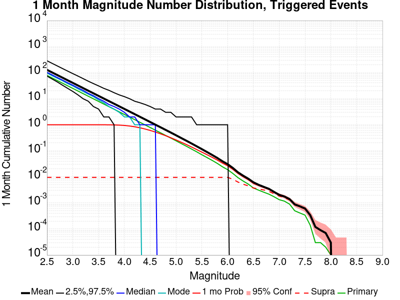
| Mag | Mean | 2.5 %ile | 97.5 %ile | Median | Mode | 1 mo Probability | 1 mo Prob 95% Conf | 1 mo Supra-Seis Prob | Primary Aftershocks Mean |
|---|---|---|---|---|---|---|---|---|---|
| M≥2.5 | 128.080 | 74.000 | 286.000 | 103.000 | 96.000 | 1.000 (100.00%) | [100.00% 100.00%] | 9.58E-3 (0.96%) | 78.606 |
| M≥2.6 | 101.735 | 57.000 | 227.000 | 82.000 | 76.000 | 1.000 (100.00%) | [100.00% 100.00%] | 9.58E-3 (0.96%) | 62.443 |
| M≥2.7 | 80.802 | 44.000 | 181.000 | 65.000 | 61.000 | 1.000 (100.00%) | [100.00% 100.00%] | 9.58E-3 (0.96%) | 49.607 |
| M≥2.8 | 64.187 | 33.000 | 144.000 | 52.000 | 49.000 | 1.000 (100.00%) | [100.00% 100.00%] | 9.58E-3 (0.96%) | 39.411 |
| M≥2.9 | 50.978 | 25.000 | 115.000 | 41.000 | 38.000 | 1.000 (100.00%) | [100.00% 100.00%] | 9.58E-3 (0.96%) | 31.297 |
| M≥3 | 40.492 | 19.000 | 92.000 | 33.000 | 31.000 | 1.000 (100.00%) | [100.00% 100.00%] | 9.58E-3 (0.96%) | 24.856 |
| M≥3.1 | 32.155 | 14.000 | 74.000 | 26.000 | 24.000 | 1.000 (100.00%) | [100.00% 100.00%] | 9.58E-3 (0.96%) | 19.740 |
| M≥3.2 | 25.527 | 10.000 | 59.000 | 21.000 | 19.000 | 1.000 (100.00%) | [100.00% 100.00%] | 9.58E-3 (0.96%) | 15.674 |
| M≥3.3 | 20.277 | 8.000 | 47.000 | 16.000 | 15.000 | 1.000 (100.00%) | [100.00% 100.00%] | 9.58E-3 (0.96%) | 12.454 |
| M≥3.4 | 16.108 | 5.000 | 38.000 | 13.000 | 12.000 | 1.000 (100.00%) | [99.99% 100.00%] | 9.58E-3 (0.96%) | 9.894 |
| M≥3.5 | 12.799 | 4.000 | 31.000 | 10.000 | 9.000 | 1.000 (99.98%) | [99.97% 99.99%] | 9.58E-3 (0.96%) | 7.859 |
| M≥3.6 | 10.167 | 2.000 | 25.000 | 8.000 | 7.000 | 0.999 (99.90%) | [99.88% 99.92%] | 9.58E-3 (0.96%) | 6.243 |
| M≥3.7 | 8.078 | 2.000 | 21.000 | 6.000 | 5.000 | 0.996 (99.61%) | [99.56% 99.64%] | 9.58E-3 (0.96%) | 4.961 |
| M≥3.8 | 6.421 | 1.000 | 17.000 | 5.000 | 4.000 | 0.988 (98.77%) | [98.70% 98.84%] | 9.58E-3 (0.96%) | 3.941 |
| M≥3.9 | 5.095 | 0.000 | 14.000 | 4.000 | 3.000 | 0.970 (97.00%) | [96.89% 97.10%] | 9.58E-3 (0.96%) | 3.127 |
| M≥4 | 4.047 | 0.000 | 12.000 | 3.000 | 2.000 | 0.940 (94.01%) | [93.86% 94.15%] | 9.58E-3 (0.96%) | 2.485 |
| M≥4.1 | 3.214 | 0.000 | 10.000 | 2.000 | 2.000 | 0.896 (89.60%) | [89.41% 89.79%] | 9.58E-3 (0.96%) | 1.975 |
| M≥4.2 | 2.553 | 0.000 | 8.000 | 2.000 | 1.000 | 0.837 (83.70%) | [83.47% 83.93%] | 9.58E-3 (0.96%) | 1.570 |
| M≥4.3 | 2.025 | 0.000 | 7.000 | 1.000 | 1.000 | 0.766 (76.57%) | [76.30% 76.83%] | 9.58E-3 (0.96%) | 1.245 |
| M≥4.4 | 1.607 | 0.000 | 6.000 | 1.000 | 0.000 | 0.687 (68.72%) | [68.43% 69.00%] | 9.58E-3 (0.96%) | 0.988 |
| M≥4.5 | 1.272 | 0.000 | 5.000 | 1.000 | 0.000 | 0.606 (60.57%) | [60.26% 60.87%] | 9.58E-3 (0.96%) | 0.782 |
| M≥4.6 | 1.009 | 0.000 | 4.000 | 1.000 | 0.000 | 0.525 (52.55%) | [52.24% 52.86%] | 9.58E-3 (0.96%) | 0.620 |
| M≥4.7 | 0.800 | 0.000 | 4.000 | 0.000 | 0.000 | 0.450 (44.95%) | [44.65% 45.26%] | 9.58E-3 (0.96%) | 0.492 |
| M≥4.8 | 0.633 | 0.000 | 3.000 | 0.000 | 0.000 | 0.380 (37.95%) | [37.65% 38.25%] | 9.58E-3 (0.96%) | 0.388 |
| M≥4.9 | 0.501 | 0.000 | 3.000 | 0.000 | 0.000 | 0.317 (31.71%) | [31.42% 32.00%] | 9.58E-3 (0.96%) | 0.307 |
| M≥5 | 0.395 | 0.000 | 2.000 | 0.000 | 0.000 | 0.262 (26.16%) | [25.89% 26.43%] | 9.58E-3 (0.96%) | 0.242 |
| M≥5.1 | 0.310 | 0.000 | 2.000 | 0.000 | 0.000 | 0.213 (21.35%) | [21.10% 21.60%] | 9.58E-3 (0.96%) | 0.190 |
| M≥5.2 | 0.244 | 0.000 | 2.000 | 0.000 | 0.000 | 0.174 (17.44%) | [17.21% 17.68%] | 9.58E-3 (0.96%) | 0.150 |
| M≥5.3 | 0.191 | 0.000 | 2.000 | 0.000 | 0.000 | 0.140 (14.03%) | [13.81% 14.25%] | 9.58E-3 (0.96%) | 0.117 |
| M≥5.4 | 0.149 | 0.000 | 1.000 | 0.000 | 0.000 | 0.112 (11.22%) | [11.03% 11.42%] | 9.58E-3 (0.96%) | 0.092 |
| M≥5.5 | 0.116 | 0.000 | 1.000 | 0.000 | 0.000 | 0.089 (8.92%) | [8.74% 9.10%] | 9.58E-3 (0.96%) | 0.071 |
| M≥5.6 | 0.090 | 0.000 | 1.000 | 0.000 | 0.000 | 0.071 (7.11%) | [6.95% 7.27%] | 9.58E-3 (0.96%) | 0.055 |
| M≥5.7 | 0.069 | 0.000 | 1.000 | 0.000 | 0.000 | 0.056 (5.63%) | [5.49% 5.78%] | 9.58E-3 (0.96%) | 0.043 |
| M≥5.8 | 0.053 | 0.000 | 1.000 | 0.000 | 0.000 | 0.044 (4.42%) | [4.29% 4.54%] | 9.58E-3 (0.96%) | 0.033 |
| M≥5.9 | 0.040 | 0.000 | 1.000 | 0.000 | 0.000 | 0.034 (3.37%) | [3.26% 3.49%] | 9.58E-3 (0.96%) | 0.024 |
| M≥6 | 0.031 | 0.000 | 1.000 | 0.000 | 0.000 | 0.027 (2.66%) | [2.56% 2.76%] | 9.58E-3 (0.96%) | 0.019 |
| M≥6.1 | 0.022 | 0.000 | 0.000 | 0.000 | 0.000 | 0.019 (1.95%) | [1.87% 2.04%] | 8.12E-3 (0.81%) | 0.014 |
| M≥6.2 | 0.015 | 0.000 | 0.000 | 0.000 | 0.000 | 0.014 (1.35%) | [1.28% 1.42%] | 6.33E-3 (0.63%) | 9.35E-3 |
| M≥6.3 | 0.011 | 0.000 | 0.000 | 0.000 | 0.000 | 0.010 (1.02%) | [0.96% 1.08%] | 5.23E-3 (0.52%) | 6.92E-3 |
| M≥6.4 | 8.50E-3 | 0.000 | 0.000 | 0.000 | 0.000 | 7.74E-3 (0.77%) | [0.72% 0.83%] | 4.52E-3 (0.45%) | 5.28E-3 |
| M≥6.5 | 6.18E-3 | 0.000 | 0.000 | 0.000 | 0.000 | 5.64E-3 (0.56%) | [0.52% 0.61%] | 3.74E-3 (0.37%) | 3.74E-3 |
| M≥6.6 | 4.96E-3 | 0.000 | 0.000 | 0.000 | 0.000 | 4.68E-3 (0.47%) | [0.43% 0.51%] | 3.42E-3 (0.34%) | 3.09E-3 |
| M≥6.7 | 4.13E-3 | 0.000 | 0.000 | 0.000 | 0.000 | 3.92E-3 (0.39%) | [0.35% 0.43%] | 3.14E-3 (0.31%) | 2.58E-3 |
| M≥6.8 | 3.47E-3 | 0.000 | 0.000 | 0.000 | 0.000 | 3.33E-3 (0.33%) | [0.30% 0.37%] | 2.78E-3 (0.28%) | 2.17E-3 |
| M≥6.9 | 2.64E-3 | 0.000 | 0.000 | 0.000 | 0.000 | 2.56E-3 (0.26%) | [0.23% 0.29%] | 2.24E-3 (0.22%) | 1.72E-3 |
| M≥7 | 2.04E-3 | 0.000 | 0.000 | 0.000 | 0.000 | 2.00E-3 (0.20%) | [0.17% 0.23%] | 1.82E-3 (0.18%) | 1.33E-3 |
| M≥7.1 | 1.76E-3 | 0.000 | 0.000 | 0.000 | 0.000 | 1.72E-3 (0.17%) | [0.15% 0.20%] | 1.59E-3 (0.16%) | 1.17E-3 |
| M≥7.2 | 1.40E-3 | 0.000 | 0.000 | 0.000 | 0.000 | 1.37E-3 (0.14%) | [0.12% 0.16%] | 1.30E-3 (0.13%) | 9.00E-4 |
| M≥7.3 | 8.80E-4 | 0.000 | 0.000 | 0.000 | 0.000 | 8.60E-4 (0.09%) | [0.07% 0.11%] | 8.30E-4 (0.08%) | 5.00E-4 |
| M≥7.4 | 7.40E-4 | 0.000 | 0.000 | 0.000 | 0.000 | 7.20E-4 (0.07%) | [0.06% 0.09%] | 7.00E-4 (0.07%) | 4.10E-4 |
| M≥7.5 | 6.10E-4 | 0.000 | 0.000 | 0.000 | 0.000 | 5.90E-4 (0.06%) | [0.05% 0.08%] | 5.80E-4 (0.06%) | 3.40E-4 |
| M≥7.6 | 3.40E-4 | 0.000 | 0.000 | 0.000 | 0.000 | 3.40E-4 (0.03%) | [0.02% 0.05%] | 3.30E-4 (0.03%) | 1.40E-4 |
| M≥7.7 | 1.20E-4 | 0.000 | 0.000 | 0.000 | 0.000 | 1.20E-4 (0.01%) | [0.01% 0.02%] | 1.20E-4 (0.01%) | 3.00E-5 |
| M≥7.8 | 9.00E-5 | 0.000 | 0.000 | 0.000 | 0.000 | 9.00E-5 (0.01%) | [0.00% 0.02%] | 9.00E-5 (0.01%) | 3.00E-5 |
| M≥7.9 | 7.00E-5 | 0.000 | 0.000 | 0.000 | 0.000 | 7.00E-5 (0.01%) | [0.00% 0.02%] | 7.00E-5 (0.01%) | 2.00E-5 |
| M≥8 | 3.00E-5 | 0.000 | 0.000 | 0.000 | 0.000 | 3.00E-5 (0.00%) | [0.00% 0.01%] | 3.00E-5 (0.00%) | 1.00E-5 |
| M≥8.1 | 0.000 | 0.000 | 0.000 | 0.000 | 0.000 | 0.000 (0.00%) | [0.00% 0.00%] | 0.000 (0.00%) | 0.000 |
| M≥8.2 | 0.000 | 0.000 | 0.000 | 0.000 | 0.000 | 0.000 (0.00%) | [0.00% 0.00%] | 0.000 (0.00%) | 0.000 |
| M≥8.3 | 0.000 | 0.000 | 0.000 | 0.000 | 0.000 | 0.000 (0.00%) | [0.00% 0.00%] | 0.000 (0.00%) | 0.000 |
| M≥8.4 | 0.000 | 0.000 | 0.000 | 0.000 | 0.000 | 0.000 (0.00%) | [0.00% 0.00%] | 0.000 (0.00%) | 0.000 |
| M≥8.5 | 0.000 | 0.000 | 0.000 | 0.000 | 0.000 | 0.000 (0.00%) | [0.00% 0.00%] | 0.000 (0.00%) | 0.000 |
| M≥8.6 | 0.000 | 0.000 | 0.000 | 0.000 | 0.000 | 0.000 (0.00%) | [0.00% 0.00%] | 0.000 (0.00%) | 0.000 |
| M≥8.7 | 0.000 | 0.000 | 0.000 | 0.000 | 0.000 | 0.000 (0.00%) | [0.00% 0.00%] | 0.000 (0.00%) | 0.000 |
| M≥8.8 | 0.000 | 0.000 | 0.000 | 0.000 | 0.000 | 0.000 (0.00%) | [0.00% 0.00%] | 0.000 (0.00%) | 0.000 |
| M≥8.9 | 0.000 | 0.000 | 0.000 | 0.000 | 0.000 | 0.000 (0.00%) | [0.00% 0.00%] | 0.000 (0.00%) | 0.000 |
| M≥9 | 0.000 | 0.000 | 0.000 | 0.000 | 0.000 | 0.000 (0.00%) | [0.00% 0.00%] | 0.000 (0.00%) | 0.000 |
Legend

| Mag | Mean | 2.5 %ile | 97.5 %ile | Median | Mode | 1 wk Probability | 1 wk Prob 95% Conf | 1 wk Supra-Seis Prob | Primary Aftershocks Mean |
|---|---|---|---|---|---|---|---|---|---|
| M≥2.5 | 31.746 | 14.000 | 67.000 | 26.000 | 24.000 | 1.000 (100.00%) | [100.00% 100.00%] | 2.34E-3 (0.23%) | 21.405 |
| M≥2.6 | 25.212 | 11.000 | 54.000 | 20.000 | 19.000 | 1.000 (100.00%) | [100.00% 100.00%] | 2.34E-3 (0.23%) | 16.996 |
| M≥2.7 | 20.024 | 8.000 | 44.000 | 16.000 | 15.000 | 1.000 (100.00%) | [100.00% 100.00%] | 2.34E-3 (0.23%) | 13.504 |
| M≥2.8 | 15.913 | 5.000 | 35.000 | 13.000 | 12.000 | 1.000 (100.00%) | [99.99% 100.00%] | 2.34E-3 (0.23%) | 10.731 |
| M≥2.9 | 12.641 | 4.000 | 29.000 | 10.000 | 9.000 | 1.000 (99.98%) | [99.96% 99.99%] | 2.34E-3 (0.23%) | 8.525 |
| M≥3 | 10.046 | 3.000 | 23.000 | 8.000 | 7.000 | 0.999 (99.91%) | [99.89% 99.93%] | 2.34E-3 (0.23%) | 6.774 |
| M≥3.1 | 7.980 | 2.000 | 19.000 | 6.000 | 5.000 | 0.997 (99.65%) | [99.61% 99.69%] | 2.34E-3 (0.23%) | 5.381 |
| M≥3.2 | 6.334 | 1.000 | 16.000 | 5.000 | 4.000 | 0.989 (98.90%) | [98.83% 98.96%] | 2.34E-3 (0.23%) | 4.273 |
| M≥3.3 | 5.030 | 0.000 | 13.000 | 4.000 | 3.000 | 0.972 (97.18%) | [97.08% 97.28%] | 2.34E-3 (0.23%) | 3.394 |
| M≥3.4 | 3.997 | 0.000 | 11.000 | 3.000 | 2.000 | 0.943 (94.28%) | [94.13% 94.42%] | 2.34E-3 (0.23%) | 2.696 |
| M≥3.5 | 3.176 | 0.000 | 9.000 | 2.000 | 2.000 | 0.898 (89.83%) | [89.64% 90.02%] | 2.34E-3 (0.23%) | 2.142 |
| M≥3.6 | 2.523 | 0.000 | 8.000 | 2.000 | 1.000 | 0.840 (84.01%) | [83.78% 84.23%] | 2.34E-3 (0.23%) | 1.701 |
| M≥3.7 | 2.005 | 0.000 | 7.000 | 1.000 | 1.000 | 0.769 (76.93%) | [76.67% 77.19%] | 2.34E-3 (0.23%) | 1.351 |
| M≥3.8 | 1.593 | 0.000 | 6.000 | 1.000 | 1.000 | 0.691 (69.08%) | [68.80% 69.37%] | 2.34E-3 (0.23%) | 1.073 |
| M≥3.9 | 1.264 | 0.000 | 5.000 | 1.000 | 0.000 | 0.609 (60.90%) | [60.60% 61.20%] | 2.34E-3 (0.23%) | 0.851 |
| M≥4 | 1.005 | 0.000 | 4.000 | 1.000 | 0.000 | 0.529 (52.94%) | [52.63% 53.25%] | 2.34E-3 (0.23%) | 0.676 |
| M≥4.1 | 0.800 | 0.000 | 4.000 | 0.000 | 0.000 | 0.454 (45.39%) | [45.08% 45.70%] | 2.34E-3 (0.23%) | 0.538 |
| M≥4.2 | 0.635 | 0.000 | 3.000 | 0.000 | 0.000 | 0.384 (38.35%) | [38.05% 38.66%] | 2.34E-3 (0.23%) | 0.428 |
| M≥4.3 | 0.505 | 0.000 | 3.000 | 0.000 | 0.000 | 0.322 (32.20%) | [31.91% 32.49%] | 2.34E-3 (0.23%) | 0.340 |
| M≥4.4 | 0.399 | 0.000 | 2.000 | 0.000 | 0.000 | 0.266 (26.63%) | [26.35% 26.90%] | 2.34E-3 (0.23%) | 0.269 |
| M≥4.5 | 0.316 | 0.000 | 2.000 | 0.000 | 0.000 | 0.219 (21.92%) | [21.66% 22.18%] | 2.34E-3 (0.23%) | 0.213 |
| M≥4.6 | 0.251 | 0.000 | 2.000 | 0.000 | 0.000 | 0.180 (17.99%) | [17.75% 18.23%] | 2.34E-3 (0.23%) | 0.169 |
| M≥4.7 | 0.198 | 0.000 | 2.000 | 0.000 | 0.000 | 0.146 (14.57%) | [14.35% 14.79%] | 2.34E-3 (0.23%) | 0.133 |
| M≥4.8 | 0.157 | 0.000 | 1.000 | 0.000 | 0.000 | 0.118 (11.79%) | [11.60% 12.00%] | 2.34E-3 (0.23%) | 0.105 |
| M≥4.9 | 0.124 | 0.000 | 1.000 | 0.000 | 0.000 | 0.095 (9.51%) | [9.33% 9.69%] | 2.34E-3 (0.23%) | 0.083 |
| M≥5 | 0.098 | 0.000 | 1.000 | 0.000 | 0.000 | 0.077 (7.66%) | [7.50% 7.83%] | 2.34E-3 (0.23%) | 0.066 |
| M≥5.1 | 0.078 | 0.000 | 1.000 | 0.000 | 0.000 | 0.062 (6.16%) | [6.01% 6.31%] | 2.34E-3 (0.23%) | 0.052 |
| M≥5.2 | 0.061 | 0.000 | 1.000 | 0.000 | 0.000 | 0.050 (4.96%) | [4.83% 5.10%] | 2.34E-3 (0.23%) | 0.041 |
| M≥5.3 | 0.048 | 0.000 | 1.000 | 0.000 | 0.000 | 0.039 (3.90%) | [3.78% 4.02%] | 2.34E-3 (0.23%) | 0.032 |
| M≥5.4 | 0.037 | 0.000 | 1.000 | 0.000 | 0.000 | 0.031 (3.09%) | [2.99% 3.20%] | 2.34E-3 (0.23%) | 0.025 |
| M≥5.5 | 0.029 | 0.000 | 0.000 | 0.000 | 0.000 | 0.024 (2.42%) | [2.33% 2.52%] | 2.34E-3 (0.23%) | 0.019 |
| M≥5.6 | 0.023 | 0.000 | 0.000 | 0.000 | 0.000 | 0.019 (1.92%) | [1.84% 2.01%] | 2.34E-3 (0.23%) | 0.015 |
| M≥5.7 | 0.017 | 0.000 | 0.000 | 0.000 | 0.000 | 0.015 (1.47%) | [1.40% 1.55%] | 2.34E-3 (0.23%) | 0.012 |
| M≥5.8 | 0.013 | 0.000 | 0.000 | 0.000 | 0.000 | 0.012 (1.16%) | [1.10% 1.23%] | 2.34E-3 (0.23%) | 9.01E-3 |
| M≥5.9 | 9.87E-3 | 0.000 | 0.000 | 0.000 | 0.000 | 8.83E-3 (0.88%) | [0.83% 0.94%] | 2.34E-3 (0.23%) | 6.59E-3 |
| M≥6 | 7.84E-3 | 0.000 | 0.000 | 0.000 | 0.000 | 7.00E-3 (0.70%) | [0.65% 0.75%] | 2.34E-3 (0.23%) | 5.24E-3 |
| M≥6.1 | 5.82E-3 | 0.000 | 0.000 | 0.000 | 0.000 | 5.25E-3 (0.53%) | [0.48% 0.57%] | 2.07E-3 (0.21%) | 3.94E-3 |
| M≥6.2 | 4.07E-3 | 0.000 | 0.000 | 0.000 | 0.000 | 3.75E-3 (0.38%) | [0.34% 0.42%] | 1.58E-3 (0.16%) | 2.80E-3 |
| M≥6.3 | 2.97E-3 | 0.000 | 0.000 | 0.000 | 0.000 | 2.78E-3 (0.28%) | [0.25% 0.31%] | 1.32E-3 (0.13%) | 2.03E-3 |
| M≥6.4 | 2.29E-3 | 0.000 | 0.000 | 0.000 | 0.000 | 2.16E-3 (0.22%) | [0.19% 0.25%] | 1.15E-3 (0.11%) | 1.60E-3 |
| M≥6.5 | 1.70E-3 | 0.000 | 0.000 | 0.000 | 0.000 | 1.60E-3 (0.16%) | [0.14% 0.19%] | 9.60E-4 (0.10%) | 1.19E-3 |
| M≥6.6 | 1.38E-3 | 0.000 | 0.000 | 0.000 | 0.000 | 1.34E-3 (0.13%) | [0.11% 0.16%] | 8.70E-4 (0.09%) | 1.03E-3 |
| M≥6.7 | 1.13E-3 | 0.000 | 0.000 | 0.000 | 0.000 | 1.09E-3 (0.11%) | [0.09% 0.13%] | 8.10E-4 (0.08%) | 8.50E-4 |
| M≥6.8 | 9.10E-4 | 0.000 | 0.000 | 0.000 | 0.000 | 9.00E-4 (0.09%) | [0.07% 0.11%] | 7.20E-4 (0.07%) | 6.80E-4 |
| M≥6.9 | 7.30E-4 | 0.000 | 0.000 | 0.000 | 0.000 | 7.30E-4 (0.07%) | [0.06% 0.09%] | 6.20E-4 (0.06%) | 5.50E-4 |
| M≥7 | 5.10E-4 | 0.000 | 0.000 | 0.000 | 0.000 | 5.10E-4 (0.05%) | [0.04% 0.07%] | 4.60E-4 (0.05%) | 3.90E-4 |
| M≥7.1 | 4.40E-4 | 0.000 | 0.000 | 0.000 | 0.000 | 4.40E-4 (0.04%) | [0.03% 0.06%] | 4.20E-4 (0.04%) | 3.30E-4 |
| M≥7.2 | 3.50E-4 | 0.000 | 0.000 | 0.000 | 0.000 | 3.50E-4 (0.03%) | [0.02% 0.05%] | 3.40E-4 (0.03%) | 2.70E-4 |
| M≥7.3 | 2.20E-4 | 0.000 | 0.000 | 0.000 | 0.000 | 2.20E-4 (0.02%) | [0.01% 0.03%] | 2.20E-4 (0.02%) | 1.60E-4 |
| M≥7.4 | 2.00E-4 | 0.000 | 0.000 | 0.000 | 0.000 | 2.00E-4 (0.02%) | [0.01% 0.03%] | 2.00E-4 (0.02%) | 1.40E-4 |
| M≥7.5 | 1.70E-4 | 0.000 | 0.000 | 0.000 | 0.000 | 1.70E-4 (0.02%) | [0.01% 0.03%] | 1.70E-4 (0.02%) | 1.30E-4 |
| M≥7.6 | 8.00E-5 | 0.000 | 0.000 | 0.000 | 0.000 | 8.00E-5 (0.01%) | [0.00% 0.02%] | 8.00E-5 (0.01%) | 6.00E-5 |
| M≥7.7 | 1.00E-5 | 0.000 | 0.000 | 0.000 | 0.000 | 1.00E-5 (0.00%) | [0.00% 0.01%] | 1.00E-5 (0.00%) | 0.000 |
| M≥7.8 | 0.000 | 0.000 | 0.000 | 0.000 | 0.000 | 0.000 (0.00%) | [0.00% 0.00%] | 0.000 (0.00%) | 0.000 |
| M≥7.9 | 0.000 | 0.000 | 0.000 | 0.000 | 0.000 | 0.000 (0.00%) | [0.00% 0.00%] | 0.000 (0.00%) | 0.000 |
| M≥8 | 0.000 | 0.000 | 0.000 | 0.000 | 0.000 | 0.000 (0.00%) | [0.00% 0.00%] | 0.000 (0.00%) | 0.000 |
| M≥8.1 | 0.000 | 0.000 | 0.000 | 0.000 | 0.000 | 0.000 (0.00%) | [0.00% 0.00%] | 0.000 (0.00%) | 0.000 |
| M≥8.2 | 0.000 | 0.000 | 0.000 | 0.000 | 0.000 | 0.000 (0.00%) | [0.00% 0.00%] | 0.000 (0.00%) | 0.000 |
| M≥8.3 | 0.000 | 0.000 | 0.000 | 0.000 | 0.000 | 0.000 (0.00%) | [0.00% 0.00%] | 0.000 (0.00%) | 0.000 |
| M≥8.4 | 0.000 | 0.000 | 0.000 | 0.000 | 0.000 | 0.000 (0.00%) | [0.00% 0.00%] | 0.000 (0.00%) | 0.000 |
| M≥8.5 | 0.000 | 0.000 | 0.000 | 0.000 | 0.000 | 0.000 (0.00%) | [0.00% 0.00%] | 0.000 (0.00%) | 0.000 |
| M≥8.6 | 0.000 | 0.000 | 0.000 | 0.000 | 0.000 | 0.000 (0.00%) | [0.00% 0.00%] | 0.000 (0.00%) | 0.000 |
| M≥8.7 | 0.000 | 0.000 | 0.000 | 0.000 | 0.000 | 0.000 (0.00%) | [0.00% 0.00%] | 0.000 (0.00%) | 0.000 |
| M≥8.8 | 0.000 | 0.000 | 0.000 | 0.000 | 0.000 | 0.000 (0.00%) | [0.00% 0.00%] | 0.000 (0.00%) | 0.000 |
| M≥8.9 | 0.000 | 0.000 | 0.000 | 0.000 | 0.000 | 0.000 (0.00%) | [0.00% 0.00%] | 0.000 (0.00%) | 0.000 |
| M≥9 | 0.000 | 0.000 | 0.000 | 0.000 | 0.000 | 0.000 (0.00%) | [0.00% 0.00%] | 0.000 (0.00%) | 0.000 |
Legend

| Mag | Mean | 2.5 %ile | 97.5 %ile | Median | Mode | 1 d Probability | 1 d Prob 95% Conf | 1 d Supra-Seis Prob | Primary Aftershocks Mean |
|---|---|---|---|---|---|---|---|---|---|
| M≥2.5 | 4.159 | 0.000 | 10.000 | 3.000 | 3.000 | 0.960 (96.01%) | [95.89% 96.13%] | 4.00E-4 (0.04%) | 3.206 |
| M≥2.6 | 3.303 | 0.000 | 8.000 | 3.000 | 2.000 | 0.923 (92.31%) | [92.14% 92.47%] | 4.00E-4 (0.04%) | 2.545 |
| M≥2.7 | 2.625 | 0.000 | 7.000 | 2.000 | 1.000 | 0.870 (87.01%) | [86.80% 87.22%] | 4.00E-4 (0.04%) | 2.023 |
| M≥2.8 | 2.088 | 0.000 | 6.000 | 2.000 | 1.000 | 0.804 (80.43%) | [80.18% 80.67%] | 4.00E-4 (0.04%) | 1.609 |
| M≥2.9 | 1.656 | 0.000 | 5.000 | 1.000 | 1.000 | 0.728 (72.84%) | [72.56% 73.11%] | 4.00E-4 (0.04%) | 1.277 |
| M≥3 | 1.318 | 0.000 | 5.000 | 1.000 | 0.000 | 0.647 (64.73%) | [64.44% 65.03%] | 4.00E-4 (0.04%) | 1.014 |
| M≥3.1 | 1.047 | 0.000 | 4.000 | 1.000 | 0.000 | 0.564 (56.41%) | [56.10% 56.72%] | 4.00E-4 (0.04%) | 0.806 |
| M≥3.2 | 0.830 | 0.000 | 3.000 | 0.000 | 0.000 | 0.484 (48.37%) | [48.05% 48.68%] | 4.00E-4 (0.04%) | 0.638 |
| M≥3.3 | 0.658 | 0.000 | 3.000 | 0.000 | 0.000 | 0.411 (41.09%) | [40.78% 41.39%] | 4.00E-4 (0.04%) | 0.505 |
| M≥3.4 | 0.523 | 0.000 | 3.000 | 0.000 | 0.000 | 0.345 (34.46%) | [34.17% 34.76%] | 4.00E-4 (0.04%) | 0.401 |
| M≥3.5 | 0.415 | 0.000 | 2.000 | 0.000 | 0.000 | 0.286 (28.64%) | [28.36% 28.92%] | 4.00E-4 (0.04%) | 0.318 |
| M≥3.6 | 0.330 | 0.000 | 2.000 | 0.000 | 0.000 | 0.236 (23.58%) | [23.32% 23.84%] | 4.00E-4 (0.04%) | 0.252 |
| M≥3.7 | 0.263 | 0.000 | 2.000 | 0.000 | 0.000 | 0.194 (19.36%) | [19.11% 19.60%] | 4.00E-4 (0.04%) | 0.201 |
| M≥3.8 | 0.208 | 0.000 | 2.000 | 0.000 | 0.000 | 0.158 (15.78%) | [15.55% 16.00%] | 4.00E-4 (0.04%) | 0.160 |
| M≥3.9 | 0.165 | 0.000 | 1.000 | 0.000 | 0.000 | 0.128 (12.77%) | [12.57% 12.98%] | 4.00E-4 (0.04%) | 0.127 |
| M≥4 | 0.131 | 0.000 | 1.000 | 0.000 | 0.000 | 0.103 (10.35%) | [10.16% 10.54%] | 4.00E-4 (0.04%) | 0.101 |
| M≥4.1 | 0.105 | 0.000 | 1.000 | 0.000 | 0.000 | 0.084 (8.39%) | [8.22% 8.57%] | 4.00E-4 (0.04%) | 0.081 |
| M≥4.2 | 0.084 | 0.000 | 1.000 | 0.000 | 0.000 | 0.068 (6.82%) | [6.66% 6.98%] | 4.00E-4 (0.04%) | 0.065 |
| M≥4.3 | 0.066 | 0.000 | 1.000 | 0.000 | 0.000 | 0.055 (5.50%) | [5.36% 5.64%] | 4.00E-4 (0.04%) | 0.051 |
| M≥4.4 | 0.052 | 0.000 | 1.000 | 0.000 | 0.000 | 0.044 (4.36%) | [4.24% 4.49%] | 4.00E-4 (0.04%) | 0.040 |
| M≥4.5 | 0.041 | 0.000 | 1.000 | 0.000 | 0.000 | 0.035 (3.49%) | [3.38% 3.61%] | 4.00E-4 (0.04%) | 0.032 |
| M≥4.6 | 0.033 | 0.000 | 1.000 | 0.000 | 0.000 | 0.028 (2.81%) | [2.71% 2.91%] | 4.00E-4 (0.04%) | 0.025 |
| M≥4.7 | 0.026 | 0.000 | 0.000 | 0.000 | 0.000 | 0.022 (2.23%) | [2.14% 2.32%] | 4.00E-4 (0.04%) | 0.020 |
| M≥4.8 | 0.020 | 0.000 | 0.000 | 0.000 | 0.000 | 0.017 (1.75%) | [1.67% 1.83%] | 4.00E-4 (0.04%) | 0.016 |
| M≥4.9 | 0.016 | 0.000 | 0.000 | 0.000 | 0.000 | 0.014 (1.39%) | [1.31% 1.46%] | 4.00E-4 (0.04%) | 0.012 |
| M≥5 | 0.013 | 0.000 | 0.000 | 0.000 | 0.000 | 0.011 (1.11%) | [1.04% 1.17%] | 4.00E-4 (0.04%) | 9.84E-3 |
| M≥5.1 | 0.010 | 0.000 | 0.000 | 0.000 | 0.000 | 8.80E-3 (0.88%) | [0.82% 0.94%] | 4.00E-4 (0.04%) | 7.77E-3 |
| M≥5.2 | 7.85E-3 | 0.000 | 0.000 | 0.000 | 0.000 | 6.91E-3 (0.69%) | [0.64% 0.74%] | 4.00E-4 (0.04%) | 6.07E-3 |
| M≥5.3 | 6.01E-3 | 0.000 | 0.000 | 0.000 | 0.000 | 5.34E-3 (0.53%) | [0.49% 0.58%] | 4.00E-4 (0.04%) | 4.61E-3 |
| M≥5.4 | 4.65E-3 | 0.000 | 0.000 | 0.000 | 0.000 | 4.15E-3 (0.41%) | [0.38% 0.46%] | 4.00E-4 (0.04%) | 3.58E-3 |
| M≥5.5 | 3.47E-3 | 0.000 | 0.000 | 0.000 | 0.000 | 3.15E-3 (0.32%) | [0.28% 0.35%] | 4.00E-4 (0.04%) | 2.74E-3 |
| M≥5.6 | 2.61E-3 | 0.000 | 0.000 | 0.000 | 0.000 | 2.38E-3 (0.24%) | [0.21% 0.27%] | 4.00E-4 (0.04%) | 2.10E-3 |
| M≥5.7 | 1.98E-3 | 0.000 | 0.000 | 0.000 | 0.000 | 1.80E-3 (0.18%) | [0.16% 0.21%] | 4.00E-4 (0.04%) | 1.56E-3 |
| M≥5.8 | 1.54E-3 | 0.000 | 0.000 | 0.000 | 0.000 | 1.40E-3 (0.14%) | [0.12% 0.17%] | 4.00E-4 (0.04%) | 1.20E-3 |
| M≥5.9 | 1.16E-3 | 0.000 | 0.000 | 0.000 | 0.000 | 1.05E-3 (0.10%) | [0.09% 0.13%] | 4.00E-4 (0.04%) | 9.10E-4 |
| M≥6 | 9.40E-4 | 0.000 | 0.000 | 0.000 | 0.000 | 8.50E-4 (0.08%) | [0.07% 0.11%] | 4.00E-4 (0.04%) | 7.30E-4 |
| M≥6.1 | 6.50E-4 | 0.000 | 0.000 | 0.000 | 0.000 | 5.90E-4 (0.06%) | [0.05% 0.08%] | 3.40E-4 (0.03%) | 5.00E-4 |
| M≥6.2 | 4.60E-4 | 0.000 | 0.000 | 0.000 | 0.000 | 4.10E-4 (0.04%) | [0.03% 0.06%] | 2.60E-4 (0.03%) | 3.50E-4 |
| M≥6.3 | 4.00E-4 | 0.000 | 0.000 | 0.000 | 0.000 | 3.60E-4 (0.04%) | [0.03% 0.05%] | 2.40E-4 (0.02%) | 3.10E-4 |
| M≥6.4 | 3.00E-4 | 0.000 | 0.000 | 0.000 | 0.000 | 2.80E-4 (0.03%) | [0.02% 0.04%] | 2.00E-4 (0.02%) | 2.40E-4 |
| M≥6.5 | 2.60E-4 | 0.000 | 0.000 | 0.000 | 0.000 | 2.40E-4 (0.02%) | [0.02% 0.04%] | 1.90E-4 (0.02%) | 2.20E-4 |
| M≥6.6 | 2.30E-4 | 0.000 | 0.000 | 0.000 | 0.000 | 2.20E-4 (0.02%) | [0.01% 0.03%] | 1.70E-4 (0.02%) | 1.90E-4 |
| M≥6.7 | 2.00E-4 | 0.000 | 0.000 | 0.000 | 0.000 | 1.90E-4 (0.02%) | [0.01% 0.03%] | 1.50E-4 (0.01%) | 1.70E-4 |
| M≥6.8 | 1.40E-4 | 0.000 | 0.000 | 0.000 | 0.000 | 1.30E-4 (0.01%) | [0.01% 0.02%] | 1.10E-4 (0.01%) | 1.20E-4 |
| M≥6.9 | 1.00E-4 | 0.000 | 0.000 | 0.000 | 0.000 | 1.00E-4 (0.01%) | [0.01% 0.02%] | 9.00E-5 (0.01%) | 9.00E-5 |
| M≥7 | 6.00E-5 | 0.000 | 0.000 | 0.000 | 0.000 | 6.00E-5 (0.01%) | [0.00% 0.01%] | 6.00E-5 (0.01%) | 6.00E-5 |
| M≥7.1 | 6.00E-5 | 0.000 | 0.000 | 0.000 | 0.000 | 6.00E-5 (0.01%) | [0.00% 0.01%] | 6.00E-5 (0.01%) | 6.00E-5 |
| M≥7.2 | 5.00E-5 | 0.000 | 0.000 | 0.000 | 0.000 | 5.00E-5 (0.01%) | [0.00% 0.01%] | 5.00E-5 (0.01%) | 5.00E-5 |
| M≥7.3 | 2.00E-5 | 0.000 | 0.000 | 0.000 | 0.000 | 2.00E-5 (0.00%) | [0.00% 0.01%] | 2.00E-5 (0.00%) | 2.00E-5 |
| M≥7.4 | 2.00E-5 | 0.000 | 0.000 | 0.000 | 0.000 | 2.00E-5 (0.00%) | [0.00% 0.01%] | 2.00E-5 (0.00%) | 2.00E-5 |
| M≥7.5 | 2.00E-5 | 0.000 | 0.000 | 0.000 | 0.000 | 2.00E-5 (0.00%) | [0.00% 0.01%] | 2.00E-5 (0.00%) | 2.00E-5 |
| M≥7.6 | 1.00E-5 | 0.000 | 0.000 | 0.000 | 0.000 | 1.00E-5 (0.00%) | [0.00% 0.01%] | 1.00E-5 (0.00%) | 1.00E-5 |
| M≥7.7 | 0.000 | 0.000 | 0.000 | 0.000 | 0.000 | 0.000 (0.00%) | [0.00% 0.00%] | 0.000 (0.00%) | 0.000 |
| M≥7.8 | 0.000 | 0.000 | 0.000 | 0.000 | 0.000 | 0.000 (0.00%) | [0.00% 0.00%] | 0.000 (0.00%) | 0.000 |
| M≥7.9 | 0.000 | 0.000 | 0.000 | 0.000 | 0.000 | 0.000 (0.00%) | [0.00% 0.00%] | 0.000 (0.00%) | 0.000 |
| M≥8 | 0.000 | 0.000 | 0.000 | 0.000 | 0.000 | 0.000 (0.00%) | [0.00% 0.00%] | 0.000 (0.00%) | 0.000 |
| M≥8.1 | 0.000 | 0.000 | 0.000 | 0.000 | 0.000 | 0.000 (0.00%) | [0.00% 0.00%] | 0.000 (0.00%) | 0.000 |
| M≥8.2 | 0.000 | 0.000 | 0.000 | 0.000 | 0.000 | 0.000 (0.00%) | [0.00% 0.00%] | 0.000 (0.00%) | 0.000 |
| M≥8.3 | 0.000 | 0.000 | 0.000 | 0.000 | 0.000 | 0.000 (0.00%) | [0.00% 0.00%] | 0.000 (0.00%) | 0.000 |
| M≥8.4 | 0.000 | 0.000 | 0.000 | 0.000 | 0.000 | 0.000 (0.00%) | [0.00% 0.00%] | 0.000 (0.00%) | 0.000 |
| M≥8.5 | 0.000 | 0.000 | 0.000 | 0.000 | 0.000 | 0.000 (0.00%) | [0.00% 0.00%] | 0.000 (0.00%) | 0.000 |
| M≥8.6 | 0.000 | 0.000 | 0.000 | 0.000 | 0.000 | 0.000 (0.00%) | [0.00% 0.00%] | 0.000 (0.00%) | 0.000 |
| M≥8.7 | 0.000 | 0.000 | 0.000 | 0.000 | 0.000 | 0.000 (0.00%) | [0.00% 0.00%] | 0.000 (0.00%) | 0.000 |
| M≥8.8 | 0.000 | 0.000 | 0.000 | 0.000 | 0.000 | 0.000 (0.00%) | [0.00% 0.00%] | 0.000 (0.00%) | 0.000 |
| M≥8.9 | 0.000 | 0.000 | 0.000 | 0.000 | 0.000 | 0.000 (0.00%) | [0.00% 0.00%] | 0.000 (0.00%) | 0.000 |
| M≥9 | 0.000 | 0.000 | 0.000 | 0.000 | 0.000 | 0.000 (0.00%) | [0.00% 0.00%] | 0.000 (0.00%) | 0.000 |
Legend

| Mag | Mean | 2.5 %ile | 97.5 %ile | Median | Mode | 1 hr Probability | 1 hr Prob 95% Conf | 1 hr Supra-Seis Prob | Primary Aftershocks Mean |
|---|---|---|---|---|---|---|---|---|---|
| M≥2.5 | 0.145 | 0.000 | 1.000 | 0.000 | 0.000 | 0.126 (12.62%) | [12.42% 12.83%] | 1.00E-5 (0.00%) | 0.135 |
| M≥2.6 | 0.116 | 0.000 | 1.000 | 0.000 | 0.000 | 0.102 (10.21%) | [10.02% 10.40%] | 1.00E-5 (0.00%) | 0.107 |
| M≥2.7 | 0.092 | 0.000 | 1.000 | 0.000 | 0.000 | 0.082 (8.16%) | [7.99% 8.33%] | 1.00E-5 (0.00%) | 0.085 |
| M≥2.8 | 0.073 | 0.000 | 1.000 | 0.000 | 0.000 | 0.066 (6.61%) | [6.46% 6.77%] | 1.00E-5 (0.00%) | 0.068 |
| M≥2.9 | 0.058 | 0.000 | 1.000 | 0.000 | 0.000 | 0.053 (5.31%) | [5.17% 5.45%] | 1.00E-5 (0.00%) | 0.054 |
| M≥3 | 0.047 | 0.000 | 1.000 | 0.000 | 0.000 | 0.043 (4.25%) | [4.13% 4.38%] | 1.00E-5 (0.00%) | 0.043 |
| M≥3.1 | 0.037 | 0.000 | 1.000 | 0.000 | 0.000 | 0.034 (3.38%) | [3.27% 3.49%] | 1.00E-5 (0.00%) | 0.034 |
| M≥3.2 | 0.029 | 0.000 | 1.000 | 0.000 | 0.000 | 0.027 (2.73%) | [2.63% 2.83%] | 1.00E-5 (0.00%) | 0.027 |
| M≥3.3 | 0.023 | 0.000 | 0.000 | 0.000 | 0.000 | 0.022 (2.17%) | [2.08% 2.27%] | 1.00E-5 (0.00%) | 0.022 |
| M≥3.4 | 0.018 | 0.000 | 0.000 | 0.000 | 0.000 | 0.017 (1.72%) | [1.64% 1.80%] | 1.00E-5 (0.00%) | 0.017 |
| M≥3.5 | 0.014 | 0.000 | 0.000 | 0.000 | 0.000 | 0.014 (1.36%) | [1.29% 1.44%] | 1.00E-5 (0.00%) | 0.013 |
| M≥3.6 | 0.012 | 0.000 | 0.000 | 0.000 | 0.000 | 0.011 (1.10%) | [1.04% 1.17%] | 1.00E-5 (0.00%) | 0.011 |
| M≥3.7 | 9.38E-3 | 0.000 | 0.000 | 0.000 | 0.000 | 8.89E-3 (0.89%) | [0.83% 0.95%] | 1.00E-5 (0.00%) | 8.64E-3 |
| M≥3.8 | 7.59E-3 | 0.000 | 0.000 | 0.000 | 0.000 | 7.23E-3 (0.72%) | [0.67% 0.78%] | 1.00E-5 (0.00%) | 7.02E-3 |
| M≥3.9 | 5.77E-3 | 0.000 | 0.000 | 0.000 | 0.000 | 5.48E-3 (0.55%) | [0.50% 0.60%] | 1.00E-5 (0.00%) | 5.30E-3 |
| M≥4 | 4.70E-3 | 0.000 | 0.000 | 0.000 | 0.000 | 4.46E-3 (0.45%) | [0.41% 0.49%] | 1.00E-5 (0.00%) | 4.33E-3 |
| M≥4.1 | 3.62E-3 | 0.000 | 0.000 | 0.000 | 0.000 | 3.43E-3 (0.34%) | [0.31% 0.38%] | 1.00E-5 (0.00%) | 3.30E-3 |
| M≥4.2 | 2.96E-3 | 0.000 | 0.000 | 0.000 | 0.000 | 2.83E-3 (0.28%) | [0.25% 0.32%] | 1.00E-5 (0.00%) | 2.72E-3 |
| M≥4.3 | 2.26E-3 | 0.000 | 0.000 | 0.000 | 0.000 | 2.18E-3 (0.22%) | [0.19% 0.25%] | 1.00E-5 (0.00%) | 2.12E-3 |
| M≥4.4 | 1.74E-3 | 0.000 | 0.000 | 0.000 | 0.000 | 1.70E-3 (0.17%) | [0.15% 0.20%] | 1.00E-5 (0.00%) | 1.66E-3 |
| M≥4.5 | 1.35E-3 | 0.000 | 0.000 | 0.000 | 0.000 | 1.31E-3 (0.13%) | [0.11% 0.16%] | 1.00E-5 (0.00%) | 1.27E-3 |
| M≥4.6 | 1.02E-3 | 0.000 | 0.000 | 0.000 | 0.000 | 9.90E-4 (0.10%) | [0.08% 0.12%] | 1.00E-5 (0.00%) | 9.50E-4 |
| M≥4.7 | 7.80E-4 | 0.000 | 0.000 | 0.000 | 0.000 | 7.60E-4 (0.08%) | [0.06% 0.10%] | 1.00E-5 (0.00%) | 7.40E-4 |
| M≥4.8 | 6.20E-4 | 0.000 | 0.000 | 0.000 | 0.000 | 6.00E-4 (0.06%) | [0.05% 0.08%] | 1.00E-5 (0.00%) | 5.80E-4 |
| M≥4.9 | 4.80E-4 | 0.000 | 0.000 | 0.000 | 0.000 | 4.80E-4 (0.05%) | [0.04% 0.06%] | 1.00E-5 (0.00%) | 4.50E-4 |
| M≥5 | 3.90E-4 | 0.000 | 0.000 | 0.000 | 0.000 | 3.90E-4 (0.04%) | [0.03% 0.05%] | 1.00E-5 (0.00%) | 3.60E-4 |
| M≥5.1 | 3.00E-4 | 0.000 | 0.000 | 0.000 | 0.000 | 3.00E-4 (0.03%) | [0.02% 0.04%] | 1.00E-5 (0.00%) | 2.70E-4 |
| M≥5.2 | 2.10E-4 | 0.000 | 0.000 | 0.000 | 0.000 | 2.10E-4 (0.02%) | [0.01% 0.03%] | 1.00E-5 (0.00%) | 1.90E-4 |
| M≥5.3 | 1.80E-4 | 0.000 | 0.000 | 0.000 | 0.000 | 1.80E-4 (0.02%) | [0.01% 0.03%] | 1.00E-5 (0.00%) | 1.60E-4 |
| M≥5.4 | 1.40E-4 | 0.000 | 0.000 | 0.000 | 0.000 | 1.40E-4 (0.01%) | [0.01% 0.02%] | 1.00E-5 (0.00%) | 1.30E-4 |
| M≥5.5 | 1.00E-4 | 0.000 | 0.000 | 0.000 | 0.000 | 1.00E-4 (0.01%) | [0.01% 0.02%] | 1.00E-5 (0.00%) | 9.00E-5 |
| M≥5.6 | 8.00E-5 | 0.000 | 0.000 | 0.000 | 0.000 | 8.00E-5 (0.01%) | [0.00% 0.02%] | 1.00E-5 (0.00%) | 8.00E-5 |
| M≥5.7 | 5.00E-5 | 0.000 | 0.000 | 0.000 | 0.000 | 5.00E-5 (0.01%) | [0.00% 0.01%] | 1.00E-5 (0.00%) | 5.00E-5 |
| M≥5.8 | 5.00E-5 | 0.000 | 0.000 | 0.000 | 0.000 | 5.00E-5 (0.01%) | [0.00% 0.01%] | 1.00E-5 (0.00%) | 5.00E-5 |
| M≥5.9 | 4.00E-5 | 0.000 | 0.000 | 0.000 | 0.000 | 4.00E-5 (0.00%) | [0.00% 0.01%] | 1.00E-5 (0.00%) | 4.00E-5 |
| M≥6 | 4.00E-5 | 0.000 | 0.000 | 0.000 | 0.000 | 4.00E-5 (0.00%) | [0.00% 0.01%] | 1.00E-5 (0.00%) | 4.00E-5 |
| M≥6.1 | 2.00E-5 | 0.000 | 0.000 | 0.000 | 0.000 | 2.00E-5 (0.00%) | [0.00% 0.01%] | 1.00E-5 (0.00%) | 2.00E-5 |
| M≥6.2 | 2.00E-5 | 0.000 | 0.000 | 0.000 | 0.000 | 2.00E-5 (0.00%) | [0.00% 0.01%] | 1.00E-5 (0.00%) | 2.00E-5 |
| M≥6.3 | 1.00E-5 | 0.000 | 0.000 | 0.000 | 0.000 | 1.00E-5 (0.00%) | [0.00% 0.01%] | 0.000 (0.00%) | 1.00E-5 |
| M≥6.4 | 1.00E-5 | 0.000 | 0.000 | 0.000 | 0.000 | 1.00E-5 (0.00%) | [0.00% 0.01%] | 0.000 (0.00%) | 1.00E-5 |
| M≥6.5 | 1.00E-5 | 0.000 | 0.000 | 0.000 | 0.000 | 1.00E-5 (0.00%) | [0.00% 0.01%] | 0.000 (0.00%) | 1.00E-5 |
| M≥6.6 | 1.00E-5 | 0.000 | 0.000 | 0.000 | 0.000 | 1.00E-5 (0.00%) | [0.00% 0.01%] | 0.000 (0.00%) | 1.00E-5 |
| M≥6.7 | 1.00E-5 | 0.000 | 0.000 | 0.000 | 0.000 | 1.00E-5 (0.00%) | [0.00% 0.01%] | 0.000 (0.00%) | 1.00E-5 |
| M≥6.8 | 1.00E-5 | 0.000 | 0.000 | 0.000 | 0.000 | 1.00E-5 (0.00%) | [0.00% 0.01%] | 0.000 (0.00%) | 1.00E-5 |
| M≥6.9 | 0.000 | 0.000 | 0.000 | 0.000 | 0.000 | 0.000 (0.00%) | [0.00% 0.00%] | 0.000 (0.00%) | 0.000 |
| M≥7 | 0.000 | 0.000 | 0.000 | 0.000 | 0.000 | 0.000 (0.00%) | [0.00% 0.00%] | 0.000 (0.00%) | 0.000 |
| M≥7.1 | 0.000 | 0.000 | 0.000 | 0.000 | 0.000 | 0.000 (0.00%) | [0.00% 0.00%] | 0.000 (0.00%) | 0.000 |
| M≥7.2 | 0.000 | 0.000 | 0.000 | 0.000 | 0.000 | 0.000 (0.00%) | [0.00% 0.00%] | 0.000 (0.00%) | 0.000 |
| M≥7.3 | 0.000 | 0.000 | 0.000 | 0.000 | 0.000 | 0.000 (0.00%) | [0.00% 0.00%] | 0.000 (0.00%) | 0.000 |
| M≥7.4 | 0.000 | 0.000 | 0.000 | 0.000 | 0.000 | 0.000 (0.00%) | [0.00% 0.00%] | 0.000 (0.00%) | 0.000 |
| M≥7.5 | 0.000 | 0.000 | 0.000 | 0.000 | 0.000 | 0.000 (0.00%) | [0.00% 0.00%] | 0.000 (0.00%) | 0.000 |
| M≥7.6 | 0.000 | 0.000 | 0.000 | 0.000 | 0.000 | 0.000 (0.00%) | [0.00% 0.00%] | 0.000 (0.00%) | 0.000 |
| M≥7.7 | 0.000 | 0.000 | 0.000 | 0.000 | 0.000 | 0.000 (0.00%) | [0.00% 0.00%] | 0.000 (0.00%) | 0.000 |
| M≥7.8 | 0.000 | 0.000 | 0.000 | 0.000 | 0.000 | 0.000 (0.00%) | [0.00% 0.00%] | 0.000 (0.00%) | 0.000 |
| M≥7.9 | 0.000 | 0.000 | 0.000 | 0.000 | 0.000 | 0.000 (0.00%) | [0.00% 0.00%] | 0.000 (0.00%) | 0.000 |
| M≥8 | 0.000 | 0.000 | 0.000 | 0.000 | 0.000 | 0.000 (0.00%) | [0.00% 0.00%] | 0.000 (0.00%) | 0.000 |
| M≥8.1 | 0.000 | 0.000 | 0.000 | 0.000 | 0.000 | 0.000 (0.00%) | [0.00% 0.00%] | 0.000 (0.00%) | 0.000 |
| M≥8.2 | 0.000 | 0.000 | 0.000 | 0.000 | 0.000 | 0.000 (0.00%) | [0.00% 0.00%] | 0.000 (0.00%) | 0.000 |
| M≥8.3 | 0.000 | 0.000 | 0.000 | 0.000 | 0.000 | 0.000 (0.00%) | [0.00% 0.00%] | 0.000 (0.00%) | 0.000 |
| M≥8.4 | 0.000 | 0.000 | 0.000 | 0.000 | 0.000 | 0.000 (0.00%) | [0.00% 0.00%] | 0.000 (0.00%) | 0.000 |
| M≥8.5 | 0.000 | 0.000 | 0.000 | 0.000 | 0.000 | 0.000 (0.00%) | [0.00% 0.00%] | 0.000 (0.00%) | 0.000 |
| M≥8.6 | 0.000 | 0.000 | 0.000 | 0.000 | 0.000 | 0.000 (0.00%) | [0.00% 0.00%] | 0.000 (0.00%) | 0.000 |
| M≥8.7 | 0.000 | 0.000 | 0.000 | 0.000 | 0.000 | 0.000 (0.00%) | [0.00% 0.00%] | 0.000 (0.00%) | 0.000 |
| M≥8.8 | 0.000 | 0.000 | 0.000 | 0.000 | 0.000 | 0.000 (0.00%) | [0.00% 0.00%] | 0.000 (0.00%) | 0.000 |
| M≥8.9 | 0.000 | 0.000 | 0.000 | 0.000 | 0.000 | 0.000 (0.00%) | [0.00% 0.00%] | 0.000 (0.00%) | 0.000 |
| M≥9 | 0.000 | 0.000 | 0.000 | 0.000 | 0.000 | 0.000 (0.00%) | [0.00% 0.00%] | 0.000 (0.00%) | 0.000 |
These plots show how the probability of ruptures of various magnitudes within 100km of any scenario rupture changes over time

| Forecast Duration | UCERF3-ETAS [95% Conf] | UCERF3-ETAS Triggered Only | UCERF3-TD | UCERF3-ETAS/TD Gain | UCERF3-TI |
|---|---|---|---|---|---|
| 1 Hour | 4.83E-4 [3.74E-4 - 6.32E-4] | 3.90E-4 | 9.34E-5 | 5.17 | 9.28E-5 |
| 1 Day | 0.013 [0.013 - 0.014] | 0.011 | 2.24E-3 | 5.9 | 2.22E-3 |
| 1 Week | 0.091 [0.089 - 0.092] | 0.076 | 0.016 | 5.82 | 0.015 |
| 1 Month | 0.309 [0.306 - 0.311] | 0.260 | 0.065 | 4.74 | 0.065 |
| 1 Year | 0.907 [0.906 - 0.908] | 0.789 | 0.559 | 1.62 | 0.557 |
| 10 Years | 1.000 [1.000 - 1.000] | 0.964 | 1.000 | 1 | 1.000 |
| 30 Years | 1.000 [1.000 - 1.000] * | * | 1.000 | 1 * | 1.000 |
| 100 Years | 1.000 [1.000 - 1.000] * | * | 1.000 | 1 * | 1.000 |
* forecast duration is longer than simulation length, only ETAS ruptures from the first 10 years are included

| Forecast Duration | UCERF3-ETAS [95% Conf] | UCERF3-ETAS Triggered Only | UCERF3-TD | UCERF3-ETAS/TD Gain | UCERF3-TI |
|---|---|---|---|---|---|
| 1 Hour | 5.10E-5 [2.38E-5 - 1.21E-4] | 4.00E-5 | 1.10E-5 | 4.64 | 1.03E-5 |
| 1 Day | 1.08E-3 [9.20E-4 - 1.29E-3] | 8.20E-4 | 2.64E-4 | 4.11 | 2.48E-4 |
| 1 Week | 8.75E-3 [8.25E-3 - 9.29E-3] | 6.92E-3 | 1.84E-3 | 4.74 | 1.74E-3 |
| 1 Month | 0.034 [0.033 - 0.035] | 0.026 | 7.88E-3 | 4.32 | 7.42E-3 |
| 1 Year | 0.213 [0.211 - 0.215] | 0.133 | 0.092 | 2.32 | 0.087 |
| 10 Years | 0.722 [0.721 - 0.723] | 0.271 | 0.619 | 1.17 | 0.596 |
| 30 Years | 0.959 [0.959 - 0.960] * | * | 0.944 | 1.02 * | 0.934 |
| 100 Years | 1.000 [1.000 - 1.000] * | * | 1.000 | 1 * | 1.000 |
* forecast duration is longer than simulation length, only ETAS ruptures from the first 10 years are included
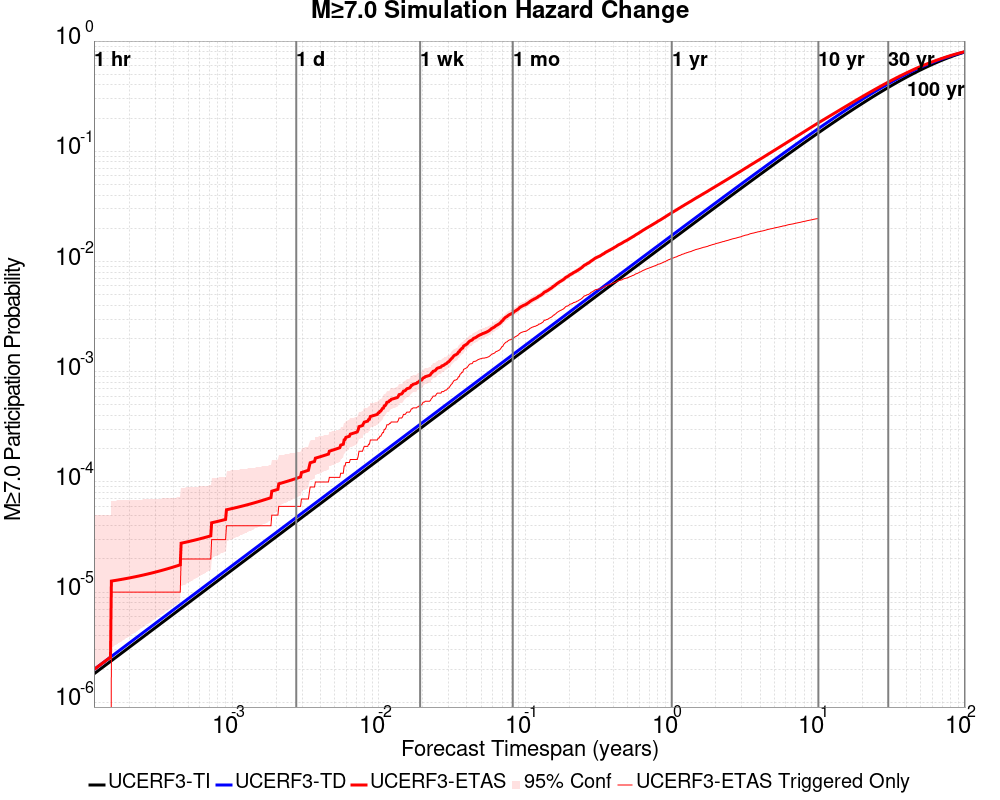
| Forecast Duration | UCERF3-ETAS [95% Conf] | UCERF3-ETAS Triggered Only | UCERF3-TD | UCERF3-ETAS/TD Gain | UCERF3-TI |
|---|---|---|---|---|---|
| 1 Hour | 1.98E-6 [1.98E-6 - 4.99E-5] | 0.000 | 1.98E-6 | 1 | 1.81E-6 |
| 1 Day | 1.08E-4 [7.20E-5 - 1.85E-4] | 6.00E-5 | 4.76E-5 | 2.26 | 4.35E-5 |
| 1 Week | 8.33E-4 [7.08E-4 - 9.98E-4] | 5.00E-4 | 3.33E-4 | 2.5 | 3.05E-4 |
| 1 Month | 3.40E-3 [3.14E-3 - 3.70E-3] | 1.98E-3 | 1.43E-3 | 2.39 | 1.30E-3 |
| 1 Year | 0.028 [0.027 - 0.028] | 0.011 | 0.017 | 1.61 | 0.016 |
| 10 Years | 0.181 [0.180 - 0.182] | 0.025 | 0.161 | 1.13 | 0.147 |
| 30 Years | 0.425 [0.424 - 0.425] * | * | 0.410 | 1.04 * | 0.379 |
| 100 Years | 0.802 [0.802 - 0.802] * | * | 0.797 | 1.01 * | 0.796 |
* forecast duration is longer than simulation length, only ETAS ruptures from the first 10 years are included

| Forecast Duration | UCERF3-ETAS [95% Conf] | UCERF3-ETAS Triggered Only | UCERF3-TD | UCERF3-ETAS/TD Gain | UCERF3-TI |
|---|---|---|---|---|---|
| 1 Hour | 3.24E-7 [3.24E-7 - 4.82E-5] | 0.000 | 3.24E-7 | 1 | 2.74E-7 |
| 1 Day | 7.78E-6 [7.78E-6 - 5.57E-5] | 0.000 | 7.78E-6 | 1 | 6.57E-6 |
| 1 Week | 5.44E-5 [5.44E-5 - 1.02E-4] | 0.000 | 5.44E-5 | 1 | 4.60E-5 |
| 1 Month | 2.63E-4 [2.41E-4 - 3.29E-4] | 3.00E-5 | 2.33E-4 | 1.13 | 1.97E-4 |
| 1 Year | 2.90E-3 [2.86E-3 - 2.97E-3] | 6.00E-5 | 2.84E-3 | 1.02 | 2.40E-3 |
| 10 Years | 0.029 [0.029 - 0.029] | 1.50E-4 | 0.029 | 1.01 | 0.024 |
| 30 Years | 0.091 [0.091 - 0.091] * | * | 0.091 | 1 * | 0.070 |
| 100 Years | 0.277 [0.277 - 0.277] * | * | 0.277 | 1 * | 0.213 |
* forecast duration is longer than simulation length, only ETAS ruptures from the first 10 years are included


| Section Name | Strike, Dip, Rake | # Hypos In Poly | Max Mag w/ Hypo In Poly | # Surfs In Poly | Max Mag w/ Surf In Poly | Min Dist To Any (km) | Min Poly Dist To Any (km) | Min Dist To Largest (km) | Min Poly Dist To Largest (km) | Min Hypo Dist To Largest (km) | Min Hypo Poly Dist To Largest (km) |
|---|---|---|---|---|---|---|---|---|---|---|---|
| Airport Lake | 359, 50, -90 | 1128 | 7.1 | 1128 | 7.1 | 0.036 | 0.000 | 0.036 | 0.000 | 5.612 | 0.000 |
| Little Lake | 327, 90, 180 | 361 | 5.5 | 362 | 7.1 | 1.937 | 0.000 | 11.284 | 0.000 | 13.471 | 1.469 |
| Garlock (Central) | 71, 90, 0 | 160 | 4.73 | 161 | 7.1 | 0.225 | 0.000 | 5.600 | 0.000 | 22.766 | 10.797 |
| So Sierra Nevada | 2, 50, -90 | 127 | 4.62 | 127 | 4.62 | 0.916 | 0.000 | 4.248 | 4.233 | 16.191 | 15.188 |
| Ash Hill | 162, 90, 180 | 27 | 3.57 | 27 | 3.57 | 0.088 | 0.000 | 34.883 | 23.252 | 35.690 | 25.242 |
| Panamint Valley | 334, 90, -150 | 19 | 3.57 | 19 | 3.57 | 6.249 | 0.000 | 29.583 | 17.627 | 34.350 | 22.425 |
| Tank Canyon | 189, 50, -90 | 2 | 3.02 | 2 | 3.02 | 0.751 | 0.000 | 9.015 | 9.011 | 17.039 | 16.895 |
| Blackwater | 323, 90, 180 | 2 | 3.54 | 2 | 3.54 | 5.396 | 0.000 | 14.394 | 8.726 | 29.622 | 27.613 |
| Sierra Nevada (No Extension) | 344, 50, -90 | 0 | 0 | 5.696 | 1.331 | 39.627 | 39.626 | 58.680 | 58.391 | ||
| Owens Valley | 346, 90, 180 | 0 | 0 | 11.268 | 7.068 | 49.013 | 48.524 | 68.299 | 66.819 | ||
| Lenwood-Lockhart-Old Woman Springs | 301, 90, 180 | 0 | 0 | 18.221 | 16.222 | 53.532 | 41.707 | 59.786 | 48.595 | ||
| Towne Pass | 186, 50, -90 | 0 | 0 | 18.237 | 18.158 | 52.561 | 52.559 | 59.662 | 59.451 | ||
| Garlock (West) | 55, 90, 0 | 0 | 0 | 18.439 | 18.373 | 63.115 | 60.529 | 66.575 | 62.627 |
These are map plots of individual catalogs from the simulations, selected as the closest catalog to each of the given percentiles in terms of total number of events.
| Duration | p0.0 %-ile | p25.0 %-ile | p50.0 %-ile | p75.0 %-ile | p90.0 %-ile | p95.0 %-ile | p97.5 %-ile | p98.0 %-ile | p99.0 %-ile | p99.5 %-ile | p99.9 %-ile | p100.0 %-ile |
|---|---|---|---|---|---|---|---|---|---|---|---|---|
| 1 Week | 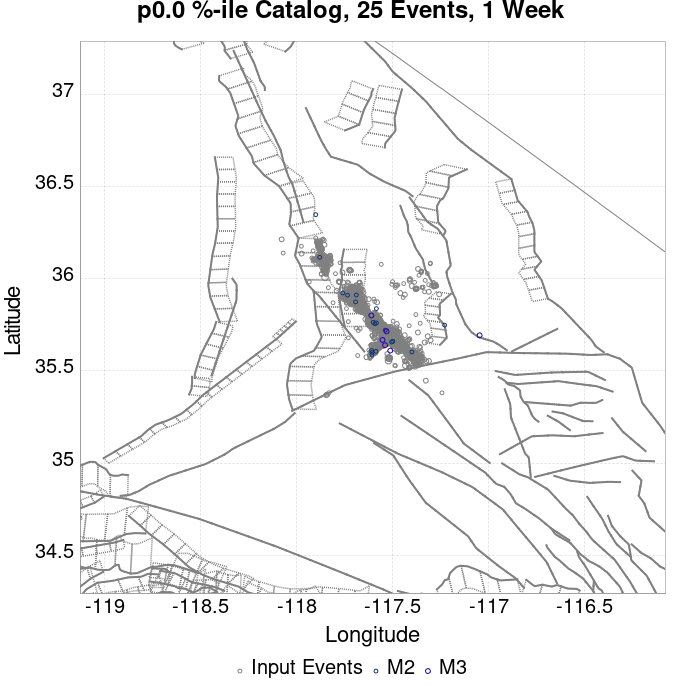 |  | 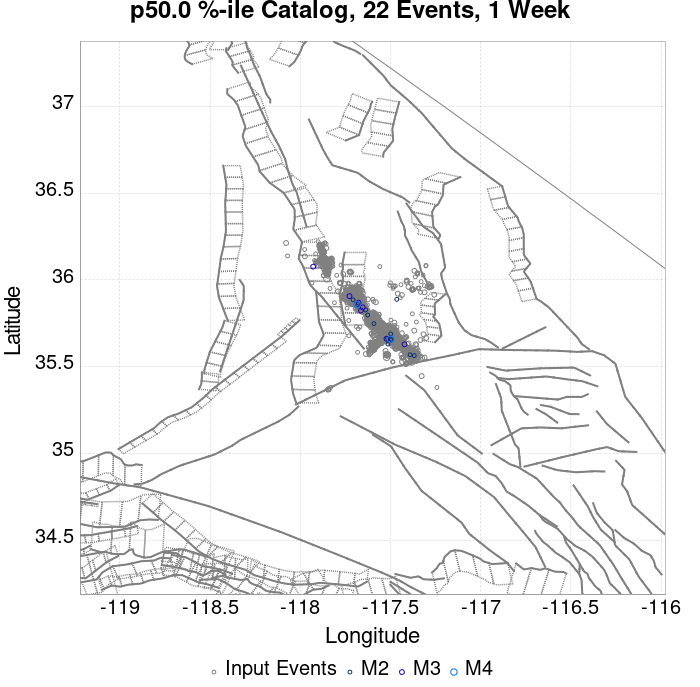 |  | 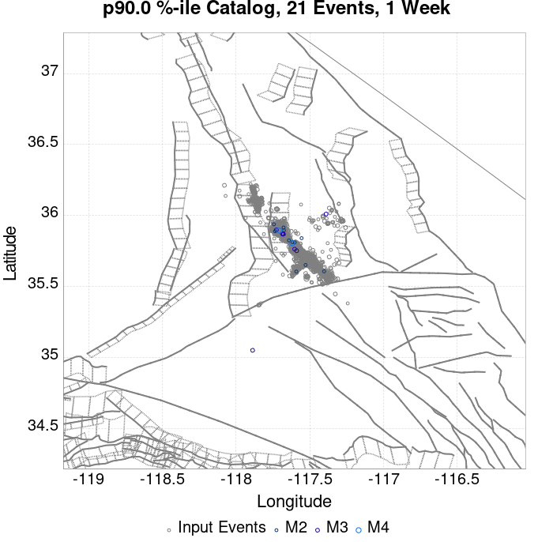 |  |  | 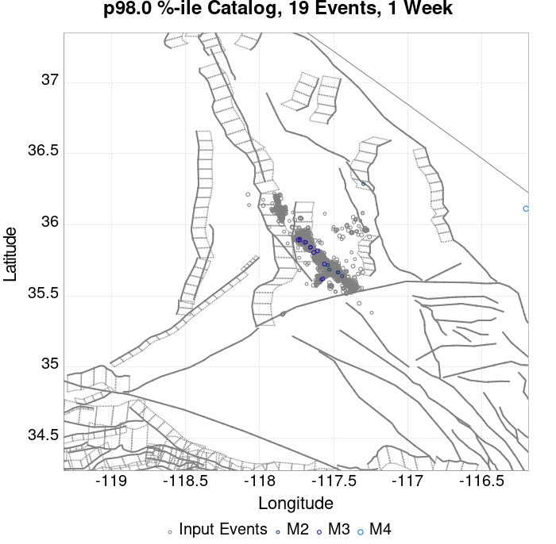 |  |  | 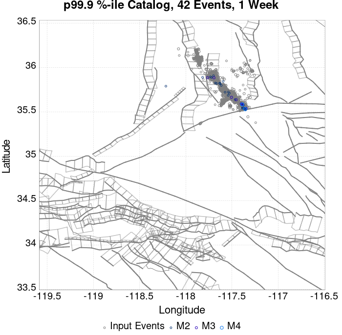 |  |
| 1 Month |  |  | 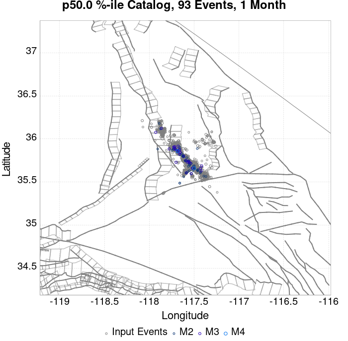 |  |  | 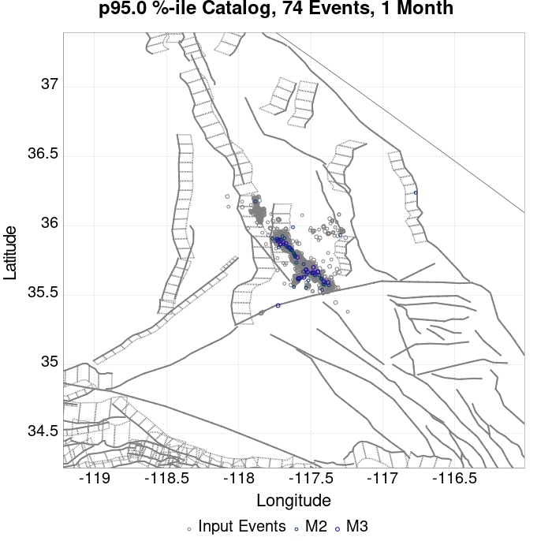 |  | 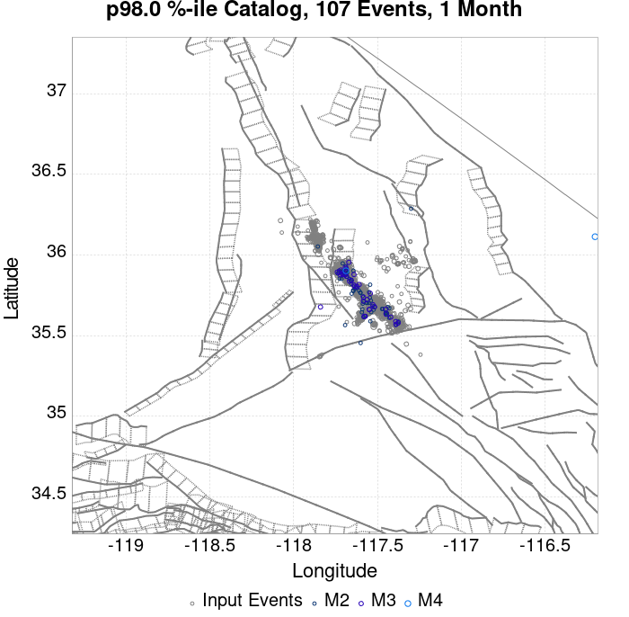 |  | 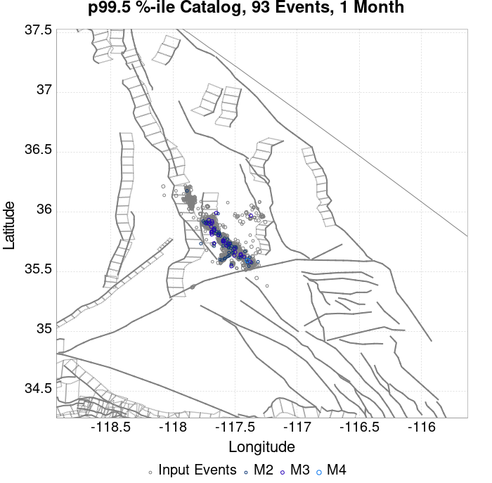 |  |  |
| 1 Year |  |  |  |  | 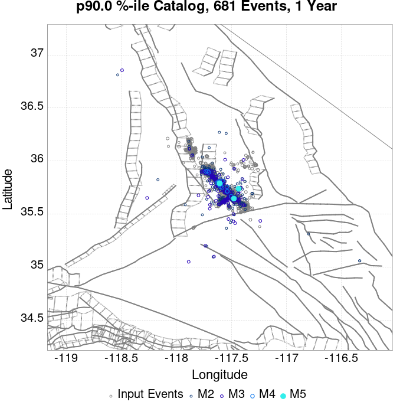 |  |  |  |  |  |  |  |
| 10 Year |  |  |  |  |  |  |  |  | 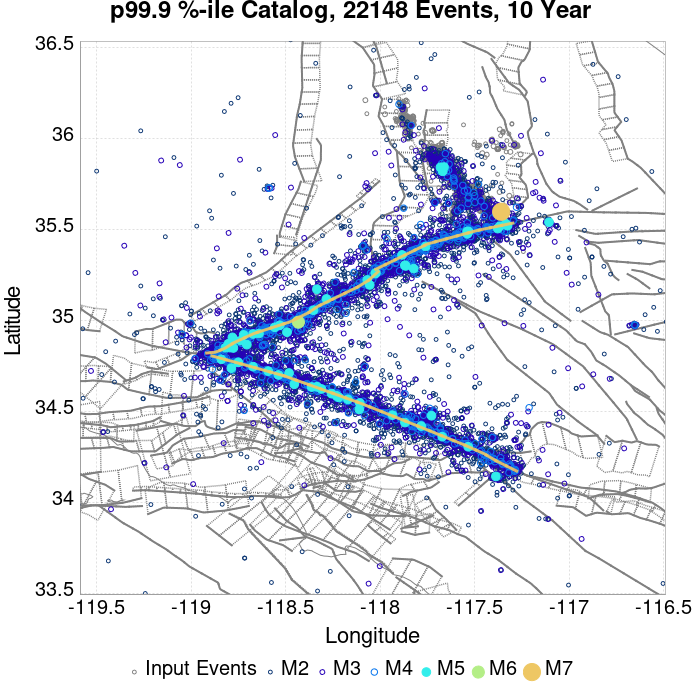 | 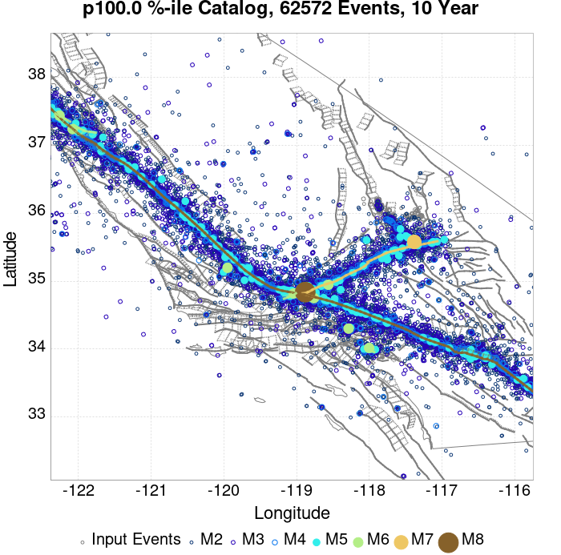 |
These plots compare simulated sequences with data from ComCat. All plots only consider events with hypocenters inside the ComCat region defined in the JSON input file.
Last updated at 2020/05/07 14:11:59 UTC, 236.5 days after the simulation start time and 306.5 days after the mainshock.
Total matching ComCat events found: 213
| Incremental MND | Cumulative MND |
|---|---|
 | 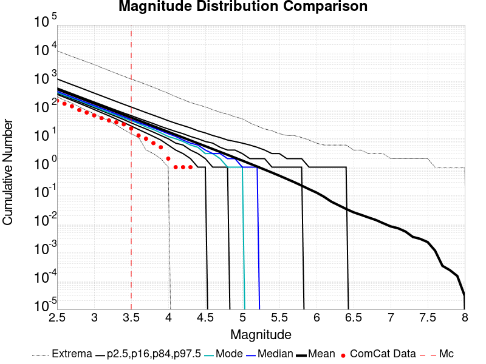 |
These plots show the show the magnitude versus time probability function since simulation start. Observed event data lie on top, with those input to the simulation plotted as magenta circles and those that occurred after the simulation start time as cyan circles. Time is relative to the mainshock (M7.1, ci38457511, plotted as a brown circle). Probabilities are only shown above the minimum simulated magnitude, M=2.5.
| 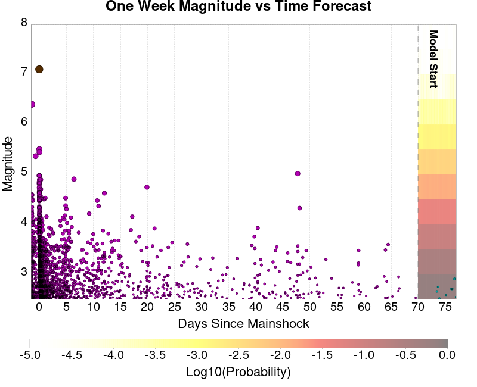 |
|---|
The following plots compare simulation results with ComCat data above a magnitude threshold. Plots labeled as M≥Mc(t) use the time-dependent magnitude of completeness (Mc) defined in Helmstetter et al. (2006), which is plotted below. In the case of multiple M≥5 ruptures, either as input to the simulation or in the comparison data, the maximum calculated time-dependent Mc is used. This time-dependent Mc function is plotted below.
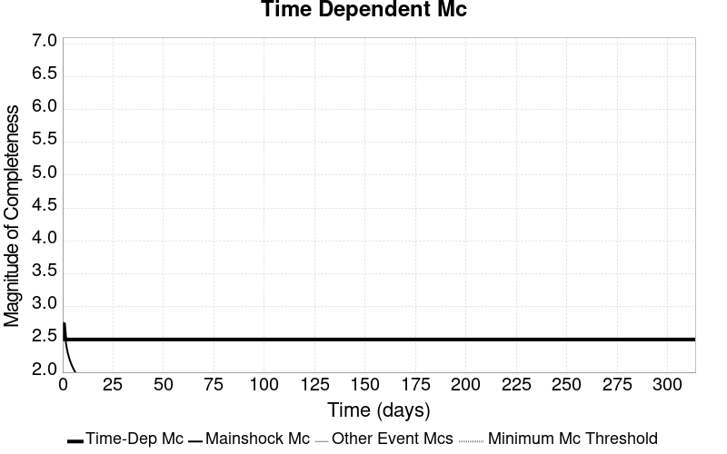
Note: maps labeled 'Forecast' are for a duration that extends into the future, only forecasted values are plotted (ComCat data omitted)
| 1 Day | 1 Week | 1 Month | Current (236.5 Day) | Forecast: 1 Year | |
|---|---|---|---|---|---|
| M≥Mc(t) | 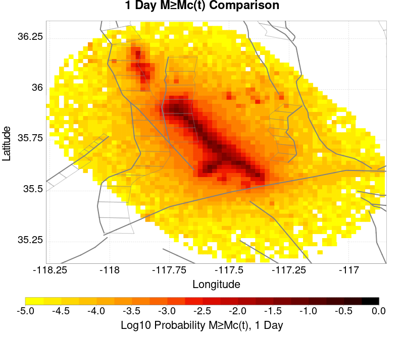 |  |  | ||
| Prob: 95.81%, Actual: 0 | Prob: 100.00%, Actual: 8 | Prob: 100.00%, Actual: 35 | Prob: 100.00%, Actual: 213 | Prob: 100.00% | |
| M≥3.5 |  |  | |||
| Prob: 28.26%, Actual: 0 | Prob: 89.47%, Actual: 0 | Prob: 99.98%, Actual: 2 | Prob: 100.00%, Actual: 23 | Prob: 100.00% | |
| M≥4 |  |  | |||
| Prob: 10.18%, Actual: 0 | Prob: 52.36%, Actual: 0 | Prob: 93.74%, Actual: 0 | Prob: 100.00%, Actual: 2 | Prob: 100.00% | |
| M≥5 |  | 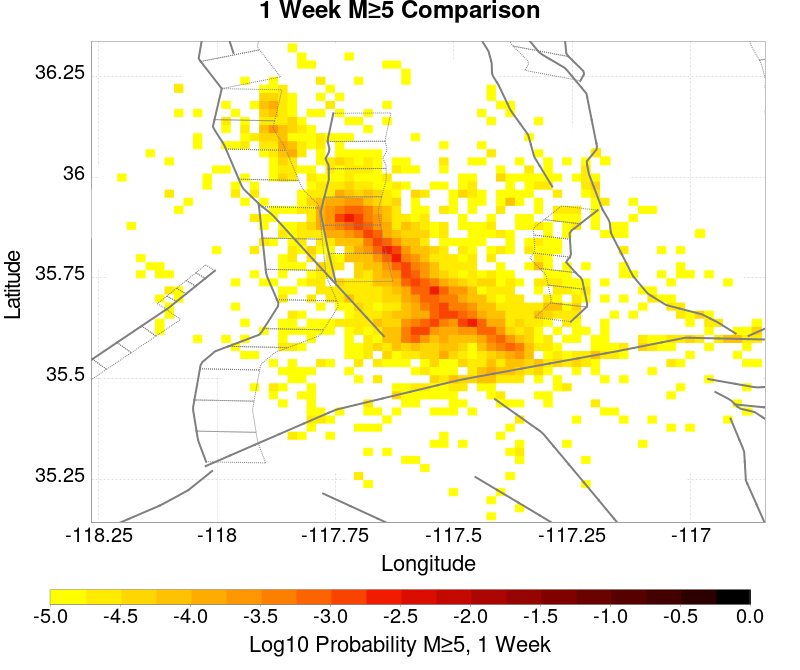 |  |  | |
| Prob: 1.09%, Actual: 0 | Prob: 7.52%, Actual: 0 | Prob: 25.78%, Actual: 0 | Prob: 71.17%, Actual: 0 | Prob: 78.46% | |
| M≥6 |  |  |  |  | |
| Prob: 0.08%, Actual: 0 | Prob: 0.67%, Actual: 0 | Prob: 2.58%, Actual: 0 | Prob: 10.45%, Actual: 0 | Prob: 12.98% | |
| M≥7 | 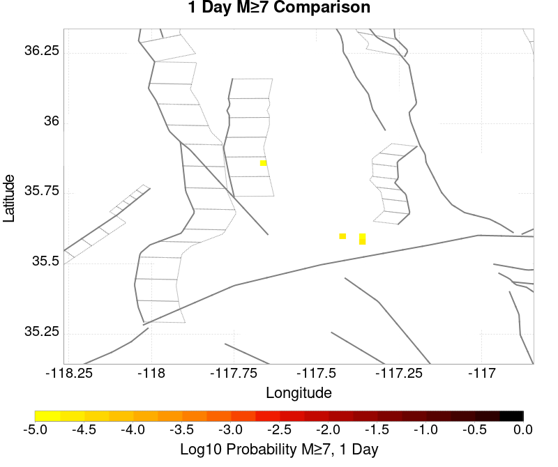 |  |  |  |  |
| Prob: 0.01%, Actual: 0 | Prob: 0.05%, Actual: 0 | Prob: 0.19%, Actual: 0 | Prob: 0.80%, Actual: 0 | Prob: 1.02% | |
| M≥8 | 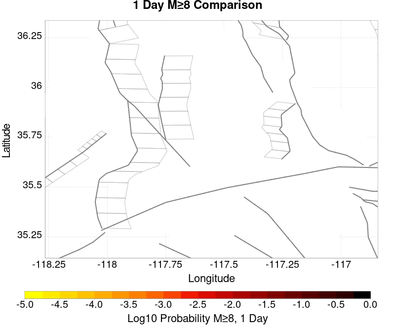 |  |  | 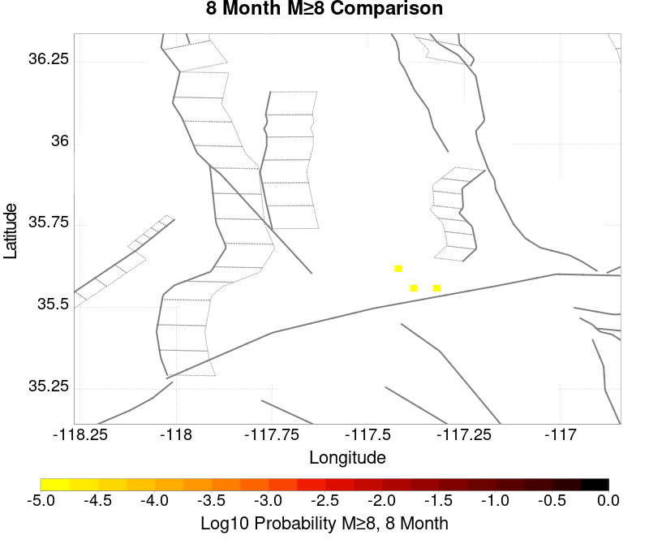 |  |
| Prob: 0.00%, Actual: 0 | Prob: 0.00%, Actual: 0 | Prob: 0.00%, Actual: 0 | Prob: 0.00%, Actual: 0 | Prob: 0.00% |
Note: maps labeled 'Forecast' are for a duration that extends into the future, only forecasted values are plotted (ComCat data omitted)
| 1 Day | 1 Week | 1 Month | Current (236.5 Day) | Forecast: 1 Year | |
|---|---|---|---|---|---|
| M≥Mc(t) |  |  | |||
| Mean: 4.021, Actual: 0 | Mean: 30.425, Actual: 8 | Mean: 121.333, Actual: 35 | Mean: 542.177, Actual: 213 | Mean: 680.735 | |
| M≥3.5 |  |  | 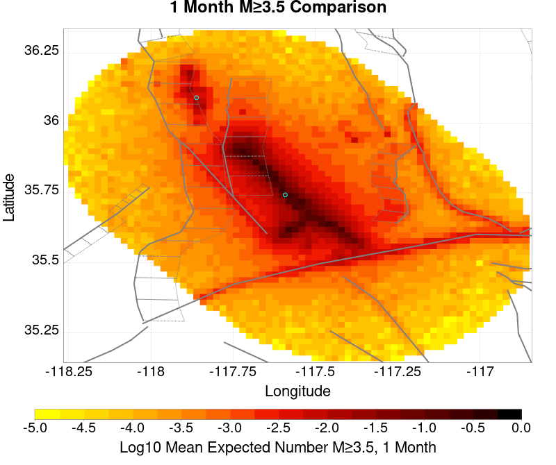 |  | |
| Mean: 0.401, Actual: 0 | Mean: 3.043, Actual: 0 | Mean: 12.122, Actual: 2 | Mean: 54.173, Actual: 23 | Mean: 68.000 | |
| M≥4 |  |  |  | ||
| Mean: 0.127, Actual: 0 | Mean: 0.962, Actual: 0 | Mean: 3.833, Actual: 0 | Mean: 17.099, Actual: 2 | Mean: 21.469 | |
| M≥5 | 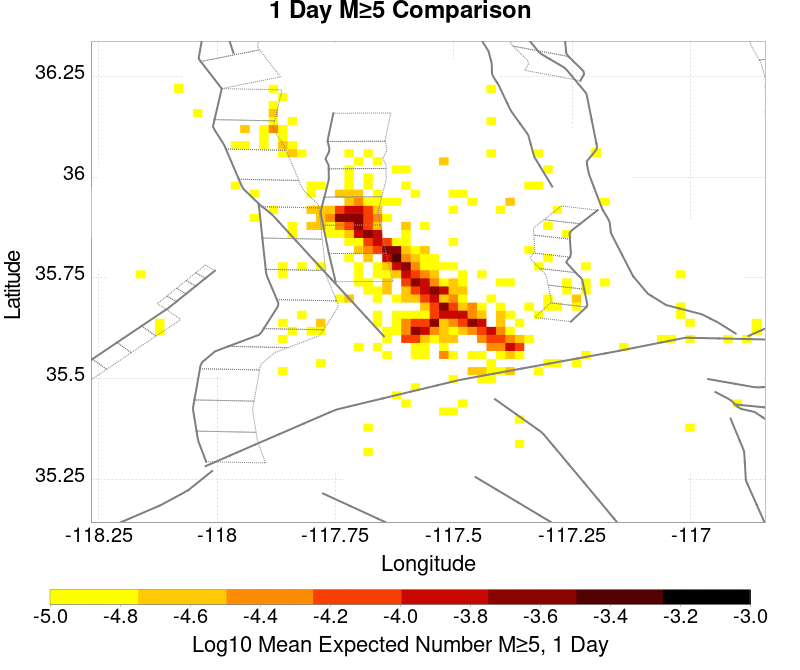 |  | 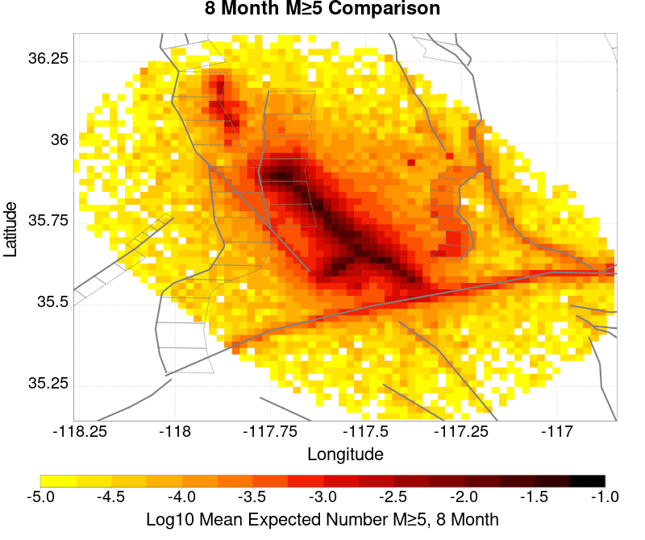 | ||
| Mean: 0.012, Actual: 0 | Mean: 0.094, Actual: 0 | Mean: 0.373, Actual: 0 | Mean: 1.669, Actual: 0 | Mean: 2.095 | |
| M≥6 |  |  | 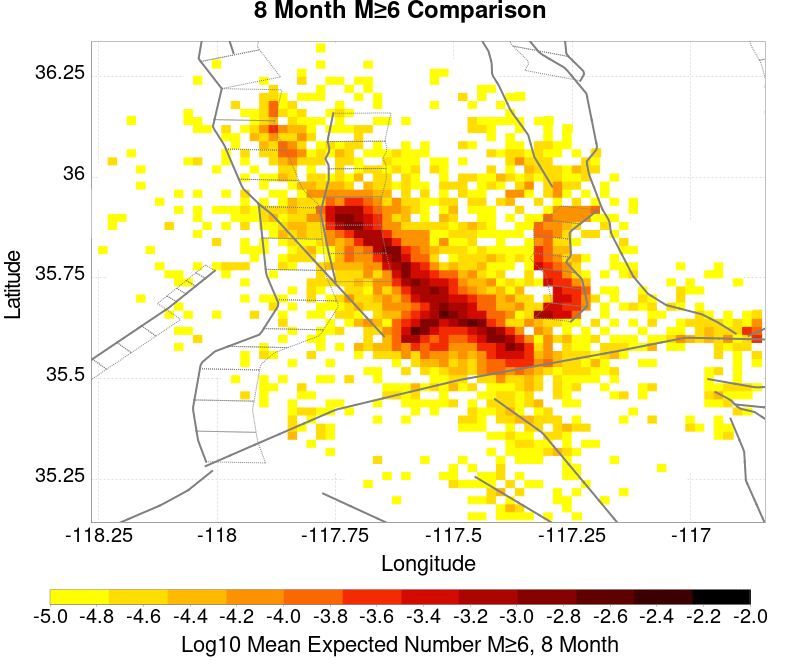 | ||
| Mean: 8.40E-4, Actual: 0 | Mean: 7.39E-3, Actual: 0 | Mean: 0.029, Actual: 0 | Mean: 0.126, Actual: 0 | Mean: 0.160 | |
| M≥7 | 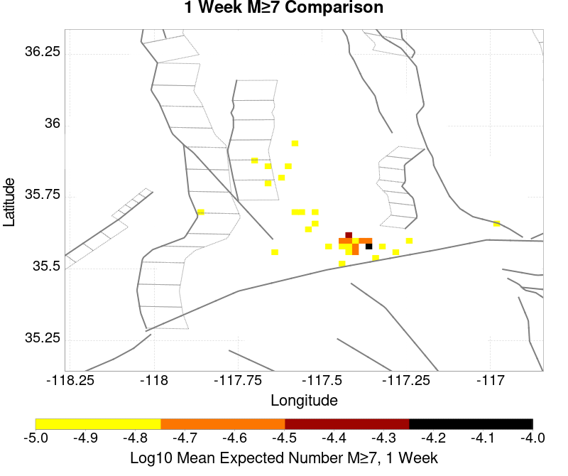 |  | |||
| Mean: 6.00E-5, Actual: 0 | Mean: 4.70E-4, Actual: 0 | Mean: 1.95E-3, Actual: 0 | Mean: 8.13E-3, Actual: 0 | Mean: 0.010 | |
| M≥8 |  |  |  |  | |
| Mean: 0.000, Actual: 0 | Mean: 0.000, Actual: 0 | Mean: 3.00E-5, Actual: 0 | Mean: 3.00E-5, Actual: 0 | Mean: 3.00E-5 |
| M≥Mc(t) | M≥3.5 | M≥4 | M≥5 | M≥6 | M≥7 | M≥8 |
|---|---|---|---|---|---|---|
 | 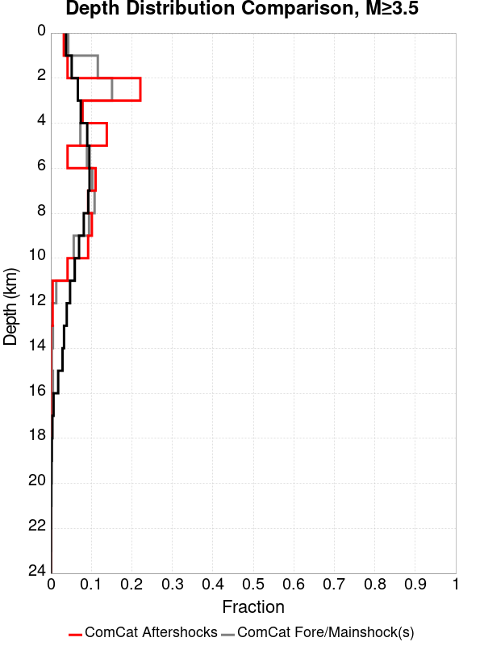 | 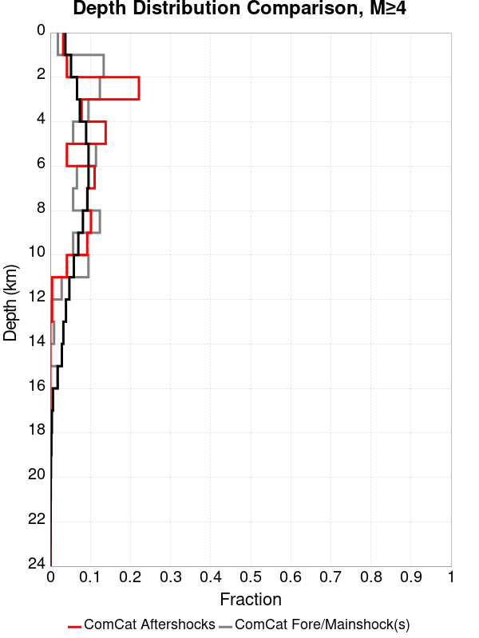 | 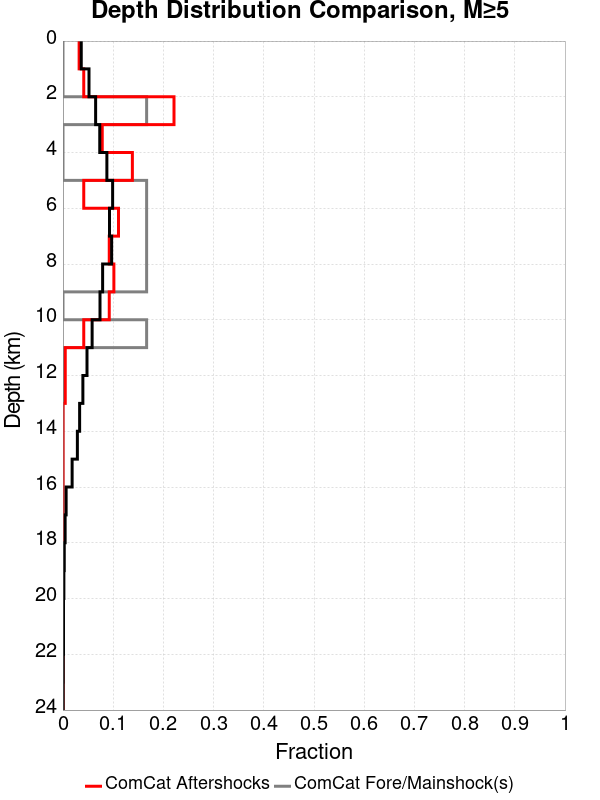 | 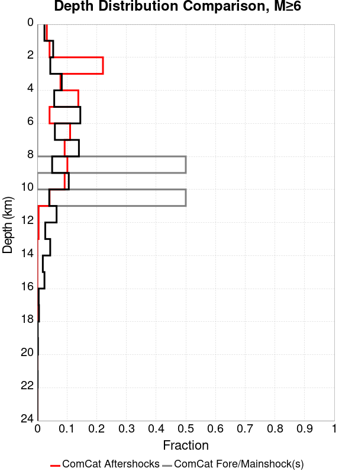 |  |  |
| Min Mag | 1 yr Triggered Ruptures (no spontaneous) | 10 yr Triggered Ruptures (no spontaneous) | 10 yr Triggered Ruptures (primary aftershocks only) |
|---|---|---|---|
| All Supra. Seis. | 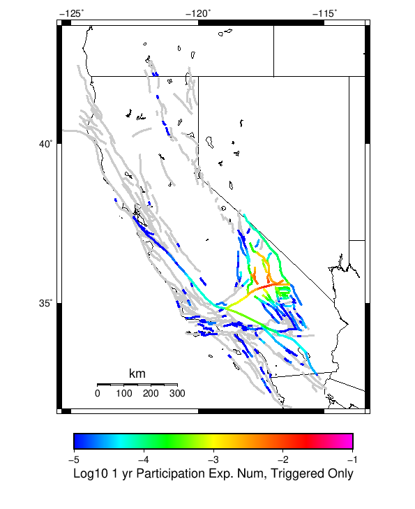 |  | |
| M≥6.5 |  |  | |
| M≥7 |  |  | |
| M≥7.5 |  | 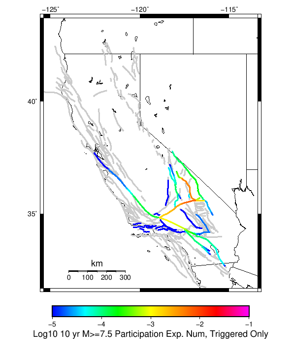 |  |
| M≥8 |  |  |  |
First 10 of 160 with matching ruptures shown
| Parent Name | Triggered 10 Year Mean Count | Triggered 1 Day Prob | Triggered 1 Day 95% Conf | Triggered 1 Week Prob | Triggered 1 Week 95% Conf | Triggered 1 Month Prob | Triggered 1 Month 95% Conf | Triggered 1 Year Prob | Triggered 1 Year 95% Conf | Triggered 10 Year Prob | Triggered 10 Year 95% Conf | Triggered 10 Year Primary Mean Count |
|---|---|---|---|---|---|---|---|---|---|---|---|---|
| Garlock (Central) | 0.04581 | 1.50E-4 (0.01%) | [0.01% 0.03%] | 9.80E-4 (0.10%) | [0.08% 0.12%] | 3.83E-3 (0.38%) | [0.35% 0.42%] | 0.020 (2.01%) | [1.92% 2.10%] | 0.044 (4.44%) | [4.32% 4.57%] | 0.02491 |
| Tank Canyon | 0.03666 | 1.10E-4 (0.01%) | [0.01% 0.02%] | 4.90E-4 (0.05%) | [0.04% 0.07%] | 2.28E-3 (0.23%) | [0.20% 0.26%] | 0.013 (1.30%) | [1.23% 1.37%] | 0.032 (3.16%) | [3.05% 3.27%] | 0.01028 |
| Little Lake | 0.02129 | 9.00E-5 (0.01%) | [0.00% 0.02%] | 4.50E-4 (0.04%) | [0.03% 0.06%] | 1.88E-3 (0.19%) | [0.16% 0.22%] | 9.20E-3 (0.92%) | [0.86% 0.98%] | 0.021 (2.08%) | [1.99% 2.17%] | 0.01173 |
| Airport Lake | 0.01639 | 6.00E-5 (0.01%) | [0.00% 0.01%] | 3.40E-4 (0.03%) | [0.02% 0.05%] | 1.52E-3 (0.15%) | [0.13% 0.18%] | 7.14E-3 (0.71%) | [0.66% 0.77%] | 0.016 (1.64%) | [1.56% 1.72%] | 0.01051 |
| Owl Lake | 0.01465 | 3.00E-5 (0.00%) | [0.00% 0.01%] | 1.80E-4 (0.02%) | [0.01% 0.03%] | 9.50E-4 (0.10%) | [0.08% 0.12%] | 5.24E-3 (0.52%) | [0.48% 0.57%] | 0.013 (1.29%) | [1.22% 1.36%] | 0.00395 |
| Panamint Valley | 0.01092 | 2.00E-5 (0.00%) | [0.00% 0.01%] | 2.10E-4 (0.02%) | [0.01% 0.03%] | 7.50E-4 (0.07%) | [0.06% 0.09%] | 4.32E-3 (0.43%) | [0.39% 0.48%] | 0.011 (1.06%) | [1.00% 1.13%] | 0.00377 |
| Garlock (East) | 0.00971 | 3.00E-5 (0.00%) | [0.00% 0.01%] | 1.70E-4 (0.02%) | [0.01% 0.03%] | 6.60E-4 (0.07%) | [0.05% 0.08%] | 3.52E-3 (0.35%) | [0.32% 0.39%] | 8.70E-3 (0.87%) | [0.81% 0.93%] | 0.0024 |
| Ash Hill | 0.00575 | 1.00E-5 (0.00%) | [0.00% 0.01%] | 7.00E-5 (0.01%) | [0.00% 0.02%] | 3.60E-4 (0.04%) | [0.03% 0.05%] | 2.27E-3 (0.23%) | [0.20% 0.26%] | 5.40E-3 (0.54%) | [0.50% 0.59%] | 0.00153 |
| Hunter Mountain-Saline Valley | 0.00482 | 1.00E-5 (0.00%) | [0.00% 0.01%] | 1.10E-4 (0.01%) | [0.01% 0.02%] | 3.00E-4 (0.03%) | [0.02% 0.04%] | 1.96E-3 (0.20%) | [0.17% 0.23%] | 4.68E-3 (0.47%) | [0.43% 0.51%] | 0.00219 |
| Blackwater | 0.00422 | 1.00E-5 (0.00%) | [0.00% 0.01%] | 6.00E-5 (0.01%) | [0.00% 0.01%] | 2.40E-4 (0.02%) | [0.02% 0.04%] | 1.51E-3 (0.15%) | [0.13% 0.18%] | 4.05E-3 (0.40%) | [0.37% 0.45%] | 8.3E-4 |
First 10 of 133 with matching ruptures shown
| Parent Name | Triggered 10 Year Mean Count | Triggered 1 Day Prob | Triggered 1 Day 95% Conf | Triggered 1 Week Prob | Triggered 1 Week 95% Conf | Triggered 1 Month Prob | Triggered 1 Month 95% Conf | Triggered 1 Year Prob | Triggered 1 Year 95% Conf | Triggered 10 Year Prob | Triggered 10 Year 95% Conf | Triggered 10 Year Primary Mean Count |
|---|---|---|---|---|---|---|---|---|---|---|---|---|
| Garlock (Central) | 0.0191 | 6.00E-5 (0.01%) | [0.00% 0.01%] | 4.30E-4 (0.04%) | [0.03% 0.06%] | 1.58E-3 (0.16%) | [0.13% 0.19%] | 8.20E-3 (0.82%) | [0.77% 0.88%] | 0.019 (1.88%) | [1.80% 1.97%] | 0.01008 |
| Little Lake | 0.01242 | 9.00E-5 (0.01%) | [0.00% 0.02%] | 2.90E-4 (0.03%) | [0.02% 0.04%] | 1.13E-3 (0.11%) | [0.09% 0.14%] | 5.46E-3 (0.55%) | [0.50% 0.59%] | 0.012 (1.22%) | [1.15% 1.29%] | 0.00714 |
| Airport Lake | 0.01228 | 6.00E-5 (0.01%) | [0.00% 0.01%] | 2.40E-4 (0.02%) | [0.02% 0.04%] | 1.03E-3 (0.10%) | [0.08% 0.13%] | 5.36E-3 (0.54%) | [0.49% 0.58%] | 0.012 (1.23%) | [1.16% 1.30%] | 0.00775 |
| Panamint Valley | 0.01 | 2.00E-5 (0.00%) | [0.00% 0.01%] | 2.00E-4 (0.02%) | [0.01% 0.03%] | 6.80E-4 (0.07%) | [0.05% 0.09%] | 3.97E-3 (0.40%) | [0.36% 0.44%] | 9.80E-3 (0.98%) | [0.92% 1.04%] | 0.00369 |
| Owl Lake | 0.00819 | 2.00E-5 (0.00%) | [0.00% 0.01%] | 1.60E-4 (0.02%) | [0.01% 0.03%] | 7.00E-4 (0.07%) | [0.05% 0.09%] | 3.45E-3 (0.34%) | [0.31% 0.38%] | 8.14E-3 (0.81%) | [0.76% 0.87%] | 0.00352 |
| Garlock (East) | 0.00648 | 2.00E-5 (0.00%) | [0.00% 0.01%] | 9.00E-5 (0.01%) | [0.00% 0.02%] | 4.40E-4 (0.04%) | [0.03% 0.06%] | 2.52E-3 (0.25%) | [0.22% 0.29%] | 6.09E-3 (0.61%) | [0.56% 0.66%] | 0.00225 |
| Hunter Mountain-Saline Valley | 0.00471 | 1.00E-5 (0.00%) | [0.00% 0.01%] | 1.10E-4 (0.01%) | [0.01% 0.02%] | 3.00E-4 (0.03%) | [0.02% 0.04%] | 1.94E-3 (0.19%) | [0.17% 0.22%] | 4.62E-3 (0.46%) | [0.42% 0.51%] | 0.00218 |
| Tank Canyon | 0.00421 | 2.00E-5 (0.00%) | [0.00% 0.01%] | 7.00E-5 (0.01%) | [0.00% 0.02%] | 2.80E-4 (0.03%) | [0.02% 0.04%] | 1.77E-3 (0.18%) | [0.15% 0.21%] | 4.19E-3 (0.42%) | [0.38% 0.46%] | 0.00104 |
| Garlock (West) | 0.00312 | 1.00E-5 (0.00%) | [0.00% 0.01%] | 4.00E-5 (0.00%) | [0.00% 0.01%] | 2.70E-4 (0.03%) | [0.02% 0.04%] | 1.37E-3 (0.14%) | [0.12% 0.16%] | 3.12E-3 (0.31%) | [0.28% 0.35%] | 0.00156 |
| So Sierra Nevada | 0.00184 | 0.000 (0.00%) | [0.00% 0.00%] | 1.00E-5 (0.00%) | [0.00% 0.01%] | 1.30E-4 (0.01%) | [0.01% 0.02%] | 7.70E-4 (0.08%) | [0.06% 0.10%] | 1.83E-3 (0.18%) | [0.16% 0.21%] | 4.7E-4 |
First 10 of 92 with matching ruptures shown
| Parent Name | Triggered 10 Year Mean Count | Triggered 1 Day Prob | Triggered 1 Day 95% Conf | Triggered 1 Week Prob | Triggered 1 Week 95% Conf | Triggered 1 Month Prob | Triggered 1 Month 95% Conf | Triggered 1 Year Prob | Triggered 1 Year 95% Conf | Triggered 10 Year Prob | Triggered 10 Year 95% Conf | Triggered 10 Year Primary Mean Count |
|---|---|---|---|---|---|---|---|---|---|---|---|---|
| Garlock (Central) | 0.01699 | 5.00E-5 (0.01%) | [0.00% 0.01%] | 3.50E-4 (0.03%) | [0.02% 0.05%] | 1.40E-3 (0.14%) | [0.12% 0.17%] | 7.28E-3 (0.73%) | [0.68% 0.78%] | 0.017 (1.68%) | [1.60% 1.76%] | 0.009 |
| Panamint Valley | 0.00673 | 1.00E-5 (0.00%) | [0.00% 0.01%] | 1.50E-4 (0.01%) | [0.01% 0.03%] | 4.90E-4 (0.05%) | [0.04% 0.07%] | 2.71E-3 (0.27%) | [0.24% 0.31%] | 6.72E-3 (0.67%) | [0.62% 0.73%] | 0.00314 |
| Owl Lake | 0.00598 | 2.00E-5 (0.00%) | [0.00% 0.01%] | 1.10E-4 (0.01%) | [0.01% 0.02%] | 5.30E-4 (0.05%) | [0.04% 0.07%] | 2.65E-3 (0.27%) | [0.23% 0.30%] | 5.98E-3 (0.60%) | [0.55% 0.65%] | 0.00346 |
| Garlock (East) | 0.00458 | 1.00E-5 (0.00%) | [0.00% 0.01%] | 8.00E-5 (0.01%) | [0.00% 0.02%] | 3.90E-4 (0.04%) | [0.03% 0.05%] | 2.03E-3 (0.20%) | [0.18% 0.23%] | 4.54E-3 (0.45%) | [0.41% 0.50%] | 0.00216 |
| Hunter Mountain-Saline Valley | 0.00453 | 1.00E-5 (0.00%) | [0.00% 0.01%] | 1.10E-4 (0.01%) | [0.01% 0.02%] | 3.00E-4 (0.03%) | [0.02% 0.04%] | 1.87E-3 (0.19%) | [0.16% 0.22%] | 4.52E-3 (0.45%) | [0.41% 0.50%] | 0.00213 |
| Garlock (West) | 0.00308 | 1.00E-5 (0.00%) | [0.00% 0.01%] | 4.00E-5 (0.00%) | [0.00% 0.01%] | 2.70E-4 (0.03%) | [0.02% 0.04%] | 1.34E-3 (0.13%) | [0.11% 0.16%] | 3.08E-3 (0.31%) | [0.28% 0.34%] | 0.00154 |
| Little Lake | 0.00258 | 1.00E-5 (0.00%) | [0.00% 0.01%] | 7.00E-5 (0.01%) | [0.00% 0.02%] | 2.50E-4 (0.03%) | [0.02% 0.04%] | 1.11E-3 (0.11%) | [0.09% 0.13%] | 2.56E-3 (0.26%) | [0.23% 0.29%] | 0.00165 |
| Airport Lake | 0.00244 | 1.00E-5 (0.00%) | [0.00% 0.01%] | 7.00E-5 (0.01%) | [0.00% 0.02%] | 2.30E-4 (0.02%) | [0.01% 0.04%] | 1.05E-3 (0.10%) | [0.09% 0.13%] | 2.44E-3 (0.24%) | [0.21% 0.28%] | 0.00156 |
| San Andreas (Mojave N) | 0.00137 | 0.000 (0.00%) | [0.00% 0.00%] | 0.000 (0.00%) | [0.00% 0.00%] | 1.10E-4 (0.01%) | [0.01% 0.02%] | 5.50E-4 (0.06%) | [0.04% 0.07%] | 1.30E-3 (0.13%) | [0.11% 0.15%] | 6.5E-4 |
| San Andreas (Mojave S) | 0.00104 | 0.000 (0.00%) | [0.00% 0.00%] | 0.000 (0.00%) | [0.00% 0.00%] | 1.00E-4 (0.01%) | [0.01% 0.02%] | 4.50E-4 (0.04%) | [0.03% 0.06%] | 1.02E-3 (0.10%) | [0.08% 0.12%] | 5.1E-4 |
First 10 of 67 with matching ruptures shown
| Parent Name | Triggered 10 Year Mean Count | Triggered 1 Day Prob | Triggered 1 Day 95% Conf | Triggered 1 Week Prob | Triggered 1 Week 95% Conf | Triggered 1 Month Prob | Triggered 1 Month 95% Conf | Triggered 1 Year Prob | Triggered 1 Year 95% Conf | Triggered 10 Year Prob | Triggered 10 Year 95% Conf | Triggered 10 Year Primary Mean Count |
|---|---|---|---|---|---|---|---|---|---|---|---|---|
| Garlock (Central) | 0.00676 | 2.00E-5 (0.00%) | [0.00% 0.01%] | 1.40E-4 (0.01%) | [0.01% 0.02%] | 5.30E-4 (0.05%) | [0.04% 0.07%] | 2.83E-3 (0.28%) | [0.25% 0.32%] | 6.71E-3 (0.67%) | [0.62% 0.72%] | 0.00343 |
| Panamint Valley | 0.00436 | 1.00E-5 (0.00%) | [0.00% 0.01%] | 1.10E-4 (0.01%) | [0.01% 0.02%] | 3.00E-4 (0.03%) | [0.02% 0.04%] | 1.79E-3 (0.18%) | [0.15% 0.21%] | 4.36E-3 (0.44%) | [0.40% 0.48%] | 0.00208 |
| Hunter Mountain-Saline Valley | 0.00434 | 1.00E-5 (0.00%) | [0.00% 0.01%] | 1.10E-4 (0.01%) | [0.01% 0.02%] | 3.00E-4 (0.03%) | [0.02% 0.04%] | 1.78E-3 (0.18%) | [0.15% 0.21%] | 4.34E-3 (0.43%) | [0.39% 0.48%] | 0.00207 |
| Garlock (West) | 0.00281 | 1.00E-5 (0.00%) | [0.00% 0.01%] | 4.00E-5 (0.00%) | [0.00% 0.01%] | 2.50E-4 (0.03%) | [0.02% 0.04%] | 1.20E-3 (0.12%) | [0.10% 0.14%] | 2.81E-3 (0.28%) | [0.25% 0.32%] | 0.0014 |
| Garlock (East) | 0.0017 | 0.000 (0.00%) | [0.00% 0.00%] | 1.00E-5 (0.00%) | [0.00% 0.01%] | 1.80E-4 (0.02%) | [0.01% 0.03%] | 7.90E-4 (0.08%) | [0.06% 0.10%] | 1.70E-3 (0.17%) | [0.15% 0.20%] | 7.5E-4 |
| San Andreas (Mojave N) | 0.00136 | 0.000 (0.00%) | [0.00% 0.00%] | 0.000 (0.00%) | [0.00% 0.00%] | 1.10E-4 (0.01%) | [0.01% 0.02%] | 5.50E-4 (0.06%) | [0.04% 0.07%] | 1.30E-3 (0.13%) | [0.11% 0.15%] | 6.5E-4 |
| San Andreas (Mojave S) | 0.00102 | 0.000 (0.00%) | [0.00% 0.00%] | 0.000 (0.00%) | [0.00% 0.00%] | 1.00E-4 (0.01%) | [0.01% 0.02%] | 4.40E-4 (0.04%) | [0.03% 0.06%] | 1.00E-3 (0.10%) | [0.08% 0.12%] | 5.0E-4 |
| San Andreas (San Bernardino N) | 6.4E-4 | 0.000 (0.00%) | [0.00% 0.00%] | 0.000 (0.00%) | [0.00% 0.00%] | 6.00E-5 (0.01%) | [0.00% 0.01%] | 2.60E-4 (0.03%) | [0.02% 0.04%] | 6.20E-4 (0.06%) | [0.05% 0.08%] | 2.9E-4 |
| Owl Lake | 6.3E-4 | 0.000 (0.00%) | [0.00% 0.00%] | 2.00E-5 (0.00%) | [0.00% 0.01%] | 5.00E-5 (0.01%) | [0.00% 0.01%] | 2.80E-4 (0.03%) | [0.02% 0.04%] | 6.30E-4 (0.06%) | [0.05% 0.08%] | 3.8E-4 |
| San Andreas (San Bernardino S) | 2.9E-4 | 0.000 (0.00%) | [0.00% 0.00%] | 0.000 (0.00%) | [0.00% 0.00%] | 3.00E-5 (0.00%) | [0.00% 0.01%] | 1.10E-4 (0.01%) | [0.01% 0.02%] | 2.90E-4 (0.03%) | [0.02% 0.04%] | 1.1E-4 |
First 10 of 27 with matching ruptures shown
| Parent Name | Triggered 10 Year Mean Count | Triggered 1 Day Prob | Triggered 1 Day 95% Conf | Triggered 1 Week Prob | Triggered 1 Week 95% Conf | Triggered 1 Month Prob | Triggered 1 Month 95% Conf | Triggered 1 Year Prob | Triggered 1 Year 95% Conf | Triggered 10 Year Prob | Triggered 10 Year 95% Conf | Triggered 10 Year Primary Mean Count |
|---|---|---|---|---|---|---|---|---|---|---|---|---|
| San Andreas (Mojave N) | 1.5E-4 | 0.000 (0.00%) | [0.00% 0.00%] | 0.000 (0.00%) | [0.00% 0.00%] | 3.00E-5 (0.00%) | [0.00% 0.01%] | 6.00E-5 (0.01%) | [0.00% 0.01%] | 1.50E-4 (0.01%) | [0.01% 0.03%] | 6.0E-5 |
| San Andreas (Mojave S) | 1.5E-4 | 0.000 (0.00%) | [0.00% 0.00%] | 0.000 (0.00%) | [0.00% 0.00%] | 3.00E-5 (0.00%) | [0.00% 0.01%] | 6.00E-5 (0.01%) | [0.00% 0.01%] | 1.50E-4 (0.01%) | [0.01% 0.03%] | 6.0E-5 |
| San Andreas (San Bernardino N) | 1.5E-4 | 0.000 (0.00%) | [0.00% 0.00%] | 0.000 (0.00%) | [0.00% 0.00%] | 3.00E-5 (0.00%) | [0.00% 0.01%] | 6.00E-5 (0.01%) | [0.00% 0.01%] | 1.50E-4 (0.01%) | [0.01% 0.03%] | 6.0E-5 |
| Garlock (Central) | 1.2E-4 | 0.000 (0.00%) | [0.00% 0.00%] | 0.000 (0.00%) | [0.00% 0.00%] | 3.00E-5 (0.00%) | [0.00% 0.01%] | 3.00E-5 (0.00%) | [0.00% 0.01%] | 1.20E-4 (0.01%) | [0.01% 0.02%] | 6.0E-5 |
| Garlock (West) | 1.2E-4 | 0.000 (0.00%) | [0.00% 0.00%] | 0.000 (0.00%) | [0.00% 0.00%] | 3.00E-5 (0.00%) | [0.00% 0.01%] | 3.00E-5 (0.00%) | [0.00% 0.01%] | 1.20E-4 (0.01%) | [0.01% 0.02%] | 6.0E-5 |
| Garlock (East) | 8.0E-5 | 0.000 (0.00%) | [0.00% 0.00%] | 0.000 (0.00%) | [0.00% 0.00%] | 2.00E-5 (0.00%) | [0.00% 0.01%] | 2.00E-5 (0.00%) | [0.00% 0.01%] | 8.00E-5 (0.01%) | [0.00% 0.02%] | 5.0E-5 |
| San Jacinto (San Bernardino) | 8.0E-5 | 0.000 (0.00%) | [0.00% 0.00%] | 0.000 (0.00%) | [0.00% 0.00%] | 1.00E-5 (0.00%) | [0.00% 0.01%] | 1.00E-5 (0.00%) | [0.00% 0.01%] | 8.00E-5 (0.01%) | [0.00% 0.02%] | 4.0E-5 |
| San Jacinto (San Jacinto Valley) rev | 8.0E-5 | 0.000 (0.00%) | [0.00% 0.00%] | 0.000 (0.00%) | [0.00% 0.00%] | 1.00E-5 (0.00%) | [0.00% 0.01%] | 1.00E-5 (0.00%) | [0.00% 0.01%] | 8.00E-5 (0.01%) | [0.00% 0.02%] | 4.0E-5 |
| San Jacinto (Stepovers Combined) | 8.0E-5 | 0.000 (0.00%) | [0.00% 0.00%] | 0.000 (0.00%) | [0.00% 0.00%] | 1.00E-5 (0.00%) | [0.00% 0.01%] | 1.00E-5 (0.00%) | [0.00% 0.01%] | 8.00E-5 (0.01%) | [0.00% 0.02%] | 4.0E-5 |
| San Andreas (San Bernardino S) | 7.0E-5 | 0.000 (0.00%) | [0.00% 0.00%] | 0.000 (0.00%) | [0.00% 0.00%] | 2.00E-5 (0.00%) | [0.00% 0.01%] | 5.00E-5 (0.01%) | [0.00% 0.01%] | 7.00E-5 (0.01%) | [0.00% 0.02%] | 2.0E-5 |
The first 5 sections (sorted by trigger rate) are plotted below. All fault MPDs are available here
| 1 Week | 1 Month | 1 Year | 10 Year |
|---|---|---|---|
 |  |  |  |
 |  |  |  |
 |  |  |  |
 |  |  |  |
 |  | 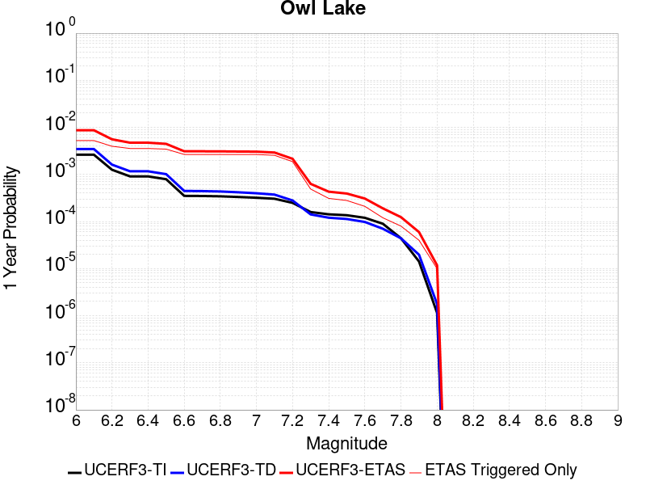 |  |
| Min Mag | Triggered Ruptures (no spontaneous) | Triggered Ruptures (primary aftershocks only) |
|---|---|---|
| M≥2.5 |  | 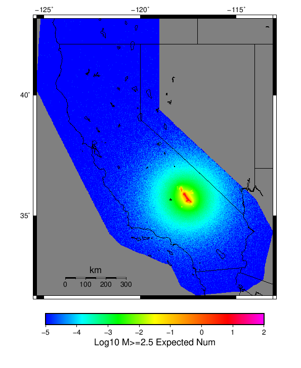 |
| M≥5 |  | |
| M≥6 |  |  |
| M≥7 |  |  |
{
"numSimulations": 100000,
"duration": 10.0,
"startTimeMillis": 1568431194040,
"includeSpontaneous": false,
"randomSeed": 1568660241758,
"binaryOutput": true,
"binaryOutputFilters": [
{
"prefix": "results_complete",
"descendantsOnly": false
},
{
"prefix": "results_m5_preserve_chain",
"minMag": 5.0,
"preserveChainBelowMag": true,
"descendantsOnly": false
}
],
"forceRecalc": false,
"simulationName": "ComCat M7.1 (ci38457511), 70 Days After, ShakeMap Surfaces",
"numRetries": 3,
"outputDir": "/home/scec-02/kmilner/ucerf3/etas_sim/2019_09_16-ComCatM7p1_ci38457511_70DaysAfter_ShakeMapSurfaces",
"triggerRuptures": [
"omitted due to length, see original input file"
],
"cacheDir": "/home/scec-02/kmilner/ucerf3/ucerf3-etas-launcher/inputs/cache_fm3p1_ba",
"fssFile": "/home/scec-02/kmilner/ucerf3/ucerf3-etas-launcher/inputs/2013_05_10-ucerf3p3-production-10runs_COMPOUND_SOL_FM3_1_SpatSeisU3_MEAN_BRANCH_AVG_SOL.zip",
"probModel": "FULL_TD",
"applySubSeisForSupraNucl": true,
"totRateScaleFactor": 1.14,
"gridSeisCorr": true,
"timeIndependentERF": false,
"griddedOnly": false,
"imposeGR": false,
"includeIndirectTriggering": true,
"gridSeisDiscr": 0.1,
"catalogCompletenessModel": "RELAXED",
"configCommand": "u3etas_comcat_event_config_builder.sh --event-id ci38457511 --num-simulations 100000 --days-before 7 --days-after 70 --mag-complete 3.5 --finite-surf-shakemap --finite-surf-shakemap-min-mag 5 --hpc-site USC_HPC --nodes 36 --hours 24 --queue scec",
"configTime": 1568660241758,
"comcatMetadata": {
"region": {
"border": [
{
"latitude": 35.15123745324938,
"longitude": -117.46198765392752
},
{
"latitude": 35.170513097218205,
"longitude": -117.55046477274733
},
{
"latitude": 35.201997575622634,
"longitude": -117.63356287896195
},
{
"latitude": 35.24474776584818,
"longitude": -117.70878534540662
},
{
"latitude": 35.2893890362986,
"longitude": -117.76387551603122
},
{
"latitude": 35.288830898189985,
"longitude": -117.76465036296011
},
{
"latitude": 35.62116745212862,
"longitude": -118.13026990137416
},
{
"latitude": 35.621789874646055,
"longitude": -118.12940866580139
},
{
"latitude": 35.621789874646055,
"longitude": -118.12940866580136
},
{
"latitude": 35.63100857737423,
"longitude": -118.14083341711117
},
{
"latitude": 35.69213881200874,
"longitude": -118.19401186444136
},
{
"latitude": 35.759827796433385,
"longitude": -118.23338865654299
},
{
"latitude": 35.8320329014668,
"longitude": -118.25773927868946
},
{
"latitude": 35.906569563076914,
"longitude": -118.26628547708222
},
{
"latitude": 35.9811764992231,
"longitude": -118.25872343341653
},
{
"latitude": 36.05358395358725,
"longitude": -118.23523828089384
},
{
"latitude": 36.12158296055357,
"longitude": -118.19650389473806
},
{
"latitude": 36.18309350302806,
"longitude": -118.14366730262441
},
{
"latitude": 36.23622937613509,
"longitude": -118.07831757407638
},
{
"latitude": 36.279357589115186,
"longitude": -118.00243964650828
},
{
"latitude": 36.31115024550475,
"longitude": -117.91835419890715
},
{
"latitude": 36.33062704347584,
"longitude": -117.82864534929934
},
{
"latitude": 36.337186832826475,
"longitude": -117.7360785775
},
{
"latitude": 36.33062704347584,
"longitude": -117.64351180570065
},
{
"latitude": 36.31115024550475,
"longitude": -117.55380295609284
},
{
"latitude": 36.279357589115186,
"longitude": -117.46971750849171
},
{
"latitude": 36.23622937613509,
"longitude": -117.39383958092363
},
{
"latitude": 36.19237301765921,
"longitude": -117.33990236386252
},
{
"latitude": 36.19237301765921,
"longitude": -117.3399023638625
},
{
"latitude": 36.19300476664728,
"longitude": -117.33902822340912
},
{
"latitude": 35.858277657147454,
"longitude": -116.97410396317103
},
{
"latitude": 35.85771127553969,
"longitude": -116.97489025431044
},
{
"latitude": 35.849566414597014,
"longitude": -116.96491461360324
},
{
"latitude": 35.78805819220281,
"longitude": -116.9122967694479
},
{
"latitude": 35.72006106557635,
"longitude": -116.87372034968973
},
{
"latitude": 35.64765482528862,
"longitude": -116.85032807444419
},
{
"latitude": 35.57304829206068,
"longitude": -116.8427916482061
},
{
"latitude": 35.49851117585832,
"longitude": -116.8512961557198
},
{
"latitude": 35.42630481575459,
"longitude": -116.87553976530553
},
{
"latitude": 35.35861392859174,
"longitude": -116.91474809853695
},
{
"latitude": 35.29748137319737,
"longitude": -116.96770221389164
},
{
"latitude": 35.24474776584818,
"longitude": -117.03277884359336
},
{
"latitude": 35.201997575622634,
"longitude": -117.10800131003803
},
{
"latitude": 35.170513097218205,
"longitude": -117.19109941625265
},
{
"latitude": 35.15123745324938,
"longitude": -117.27957653507247
},
{
"latitude": 35.14474752487352,
"longitude": -117.3707820945
}
]
},
"eventID": "ci38457511",
"minDepth": -10.0,
"maxDepth": 24.0,
"minMag": 2.5,
"startTime": 1561778393040,
"endTime": 1568431193040,
"magComplete": 3.5
}
}